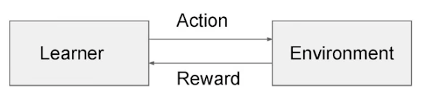
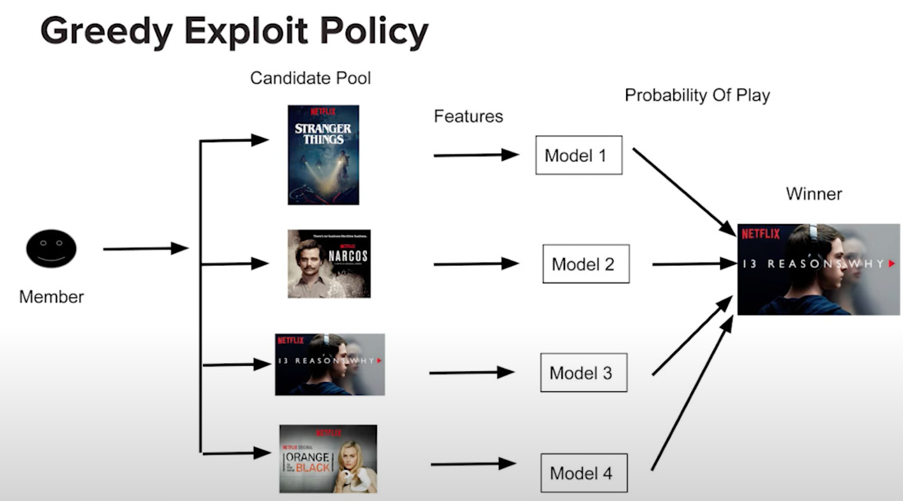
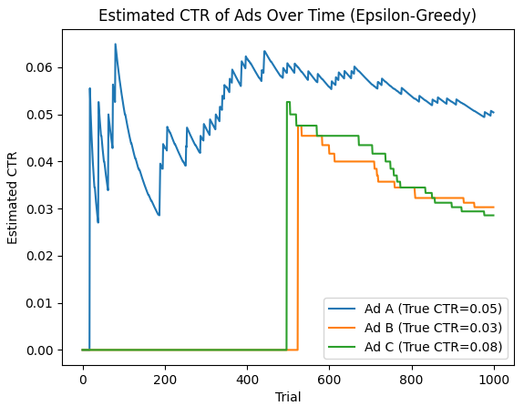
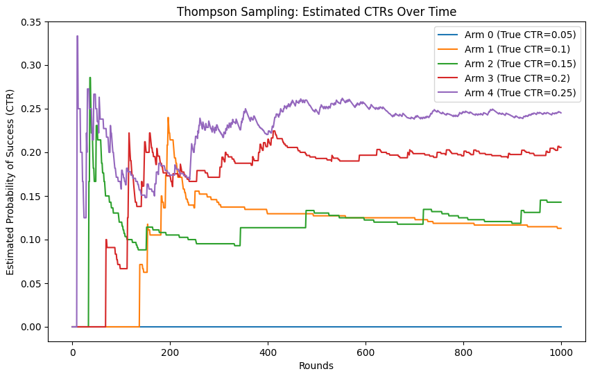
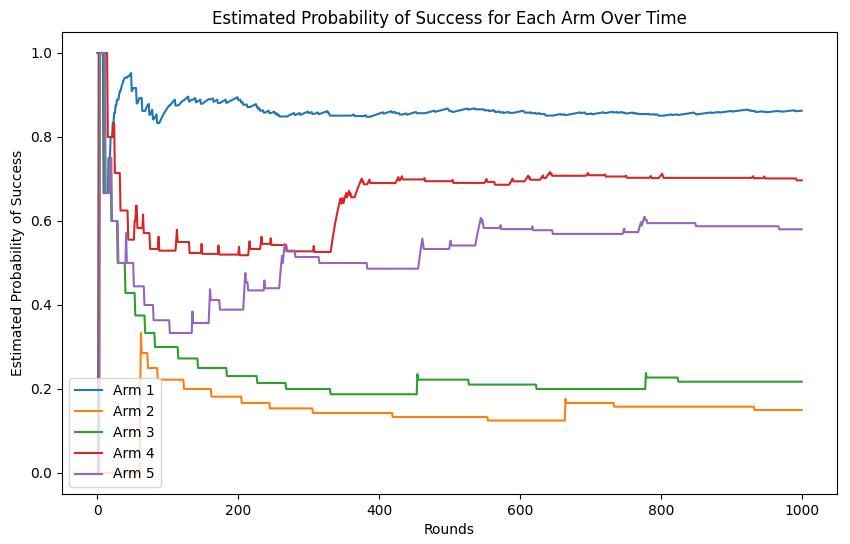
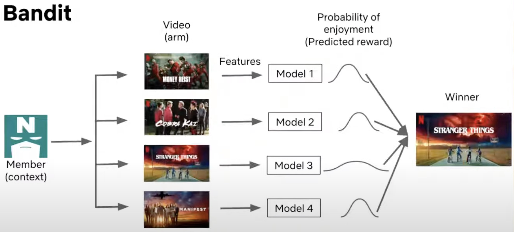
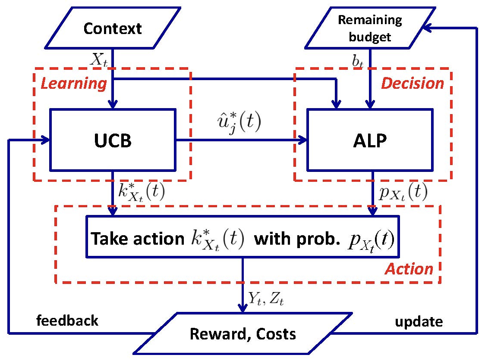
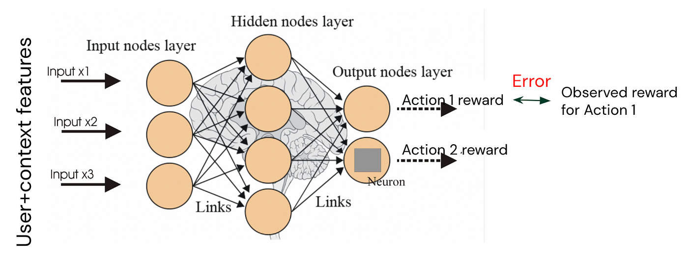
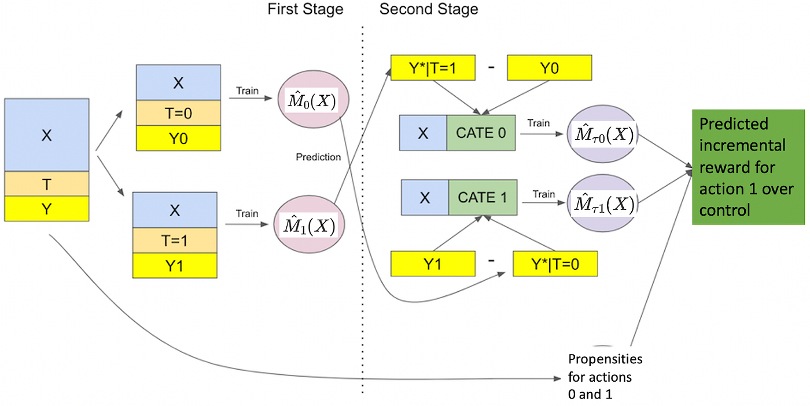

Recommendation Systems • Multi-Armed Bandits
- Overview
- Why Contextual Bandits?
- Use-cases
- Introduction to Bandit Algorithms
- Algorithms
- Comparative Analysis of Multi-Armed Bandit Algorithms
- Advantages
- Disadvantages
- Simplicity and Assumptions
- Exploration vs. Exploitation Balance
- Suboptimal Performance in Complex Environments
- Scalability Issues
- Cold Start Problem
- Poor Handling of Variability
- Incompatibility with Complex Reward Structures
- Suboptimal Performance in Collaborative Environments
- Dependence on Reward Model
- Limited Applicability to Large-Scale Sequential Decision Problems
- Contextual Bandits
- How Contextual Bandits Work
- Algorithms
- Challenges and Considerations
- Advantages
- Personalization and Adaptation to Context
- Improved Learning Efficiency
- Reduced Exploration Costs
- Better Handling of Dynamic Environments
- Higher Overall Rewards
- Scalability to Complex Decision Spaces
- Applicable to a Wide Range of Applications
- Natural Extension of Reinforcement Learning
- Incorporation of Feature-Based Models
- Disadvantages
- High Dimensionality of Contexts
- Exploration vs. Exploitation Trade-off Complexity
- Non-Stationarity of Contexts
- Data Sparsity
- Scalability Issues
- Dependence on Context Quality
- Delayed Rewards or Feedback
- Algorithmic Complexity
- Cold-Start Problem
- Assumption of Independence of Contextual Information
- Lack of Robustness
- Constrained Contextual Bandits
- Adversarial bandits
- Off-Policy Evaluation (OPE)
- Challenges of Using Reinforcement Learning in Recommendation Systems
- Use-cases
- Content Recommendation Systems
- Ad Optimization
- E-commerce Personalization
- Email Marketing Optimization
- Game Design & Personalized Gaming Experiences
- Healthcare Personalization
- Education & Learning Platforms
- Website Personalization
- Music Streaming
- Customer Support & Chatbots
- Why Bandits Excel in Personalization
- Industrial Deployments of Contextual Bandits
- Spotify: Multi-Objective Optimization in Music Streaming
- Yahoo: News Recommendation with Contextual Bandits
- Netflix: Personalizing Movie Images
- Instacart: Personalized Item Retrieval and Ranking
- DoorDash: Contextual Bandits for Cuisine Recommendations
- Spotify’s Recsplanations: Optimizing Recommendation Explanations
- Offline Evaluation Replay
- Industry examples of Bandit Deployments
- FAQs
- How are MABs implemented? what state do they track during runtime to make effective explore-exploit tradeoffs?
- How do MABs (and derivative approaches such as Contextual MABs) make real-time decisions?
- Are bandits used for non-personalized search?
- In the context of \(\epsilon\)-greedy bandit algorithm, what are some strategies/schedules to decay \(\epsilon\) for exploration?
- Do contextual bandits perform better on the cold start problem compared to traditional recommender system architectures?
- Why do Contextual Bandits Perform Better in Cold Start Scenarios?
- Are contextual bandits used in personalized search?
- Are contextual bandits used in a specific layer of the ranking pipeline?
- How do you add a new arm to a contextual bandit?
- Why do contextual bandit not require large-scale data unlike deep learning models?
- Can we do recommendations in batches with bandits (or contextual bandits)?
- What are slate and combinatorial bandits?
- What is slate evaluation?
- References
- Citation
Overview
- Bandit algorithms, or simply “bandits,” are inspired by the “Multi-Armed Bandit (MAB) problem,” a concept rooted in decision-making under uncertainty. This problem is analogous to a gambler facing a row of slot machines, often referred to as “one-armed bandits” (or simply “bandit”). Each machine (or “arm”) has an unknown probability distribution of rewards, and the gambler’s goal is to maximize cumulative rewards over time (i.e., over multiple iterations) by choosing which arm to pull (i.e., which machine to play). The key challenge lies in balancing two competing objectives: exploitation, where the gambler selects the machine that has provided the highest reward so far to maximize immediate returns, and exploration, where the gambler tries different machines to gather more information, as some unexplored machines may yield better rewards.
- The MAB problem has become a foundational model in fields such as statistics, machine learning, Reinforcement Learning (RL), operations research, and economics. It is especially relevant in applications where there is a need to balance exploration (gathering information about uncertain actions) and exploitation (leveraging known actions to maximize reward). Examples of real-world applications include online advertising (selecting which ads to show), clinical trials (deciding which treatments to allocate to patients), and recommendation systems (choosing which content to recommend). For a refresher on RL, please refer our RL primer.
- More formally, the MAB problem can be framed as a sequential decision-making process where a decision-maker (the gambler) must choose an action \(a_t\) from a set of available actions (arms) \(A\) at each time step \(t\). Each action \(a_t\) provides a stochastic reward \(r(a_t)\), sampled from a distribution with an unknown mean \(\mu(a_t)\). The objective of the decision-maker is to maximize the expected cumulative reward over \(T\) time steps: \(\max \mathbb{E} \left[ \sum_{t=1}^T r(a_t) \right].\)
- Simultaneously, the decision-maker aims to minimize regret, defined as the difference between the cumulative reward that could have been obtained by always choosing the optimal action and the actual cumulative reward obtained. Regret serves as a measure of the opportunity cost of not knowing the optimal action in advance.
- The trade-off between exploration and exploitation is a key challenge in solving MAB problems. Exploration involves selecting less-known arms to gather information about their reward distributions, which may reveal better options. Exploitation, on the other hand, involves selecting the arm that currently seems to have the highest expected reward based on available information. A naive strategy that always exploits may converge to a suboptimal solution due to insufficient exploration, while excessive exploration can lead to slower accumulation of rewards. An optimal strategy must carefully balance these two competing objectives.
- In RL, MABs are often considered a special case of more complex decision-making problems modeled by Markov Decision Processes (MDPs), where actions yield immediate rewards and affect future states and rewards. However, in MABs, actions are independent and do not influence future states, making them simpler yet highly relevant in various applications. Since RL techniques are oriented towards long-horizon strategies, MABs, as a type of RL, are suitable for applications requiring long-term reward optimization. For instance, Netflix leverages bandits to make predictions that span multiple user visits, recommending content based on delayed rewards, as members may only provide feedback after watching a series over several sessions or viewing multiple movies.
- In the context of personalization of online platforms, bandit algorithms play a critical role in optimizing user satisfaction and performance metrics, such as click-through rates (CTR) and engagement. These algorithms must balance two key objectives:
- Exploration: Testing different search results or content options to learn more about their performance.
- Exploitation: Showing the results or content options that are already known to perform well based on past user interactions.
- By dynamically adjusting the balance between exploration and exploitation, bandit algorithms continuously improve overall performance, aiming to ensure user satisfaction while learning which options yield the highest rewards.
- Bandit algorithms, when applied to search engines or recommendation systems, operate through specific elements to balance exploration and exploitation effectively.
- Arms: These represent different actions, such as presenting a particular search result or recommendation option to users.
- Rewards: These are the user’s responses to the presented options, such as clicks, conversions, or the amount of time spent on a webpage.
- Goal: The algorithm seeks to maximize the expected reward (e.g., engagement, satisfaction) by deciding when to explore less frequently selected options or exploit those that are known to perform well.
- By optimizing these elements—arms, rewards, and goal—the system continuously learns and adapts to improve user engagement and satisfaction by effectively picking the right trade-off for exploration-exploitation.
- Beyond personalization, bandit algorithms provide a more efficient approach to online A/B or multivariate testing than traditional methods. In conventional A/B testing, traffic is divided equally between different variants to assess their performance. This approach can be inefficient, as it allocates traffic to underperforming variants. Bandit algorithms address this by dynamically adjusting traffic allocation, directing more users to higher-performing options in real time. By balancing exploration (testing new options) and exploitation (favoring known successful options), bandit algorithms optimize both user satisfaction and platform performance. Their adaptive nature enables platforms to continuously learn from user behavior, leading to better content and experience optimization across platforms.
- Below, we will explore the various aspects and challenges of the MAB problem further, including its extensions to contextual bandits, where the decision-making process incorporates external information or “context” to dynamically adjust action choices, and non-stationary bandits, where reward distributions may change over time.
Why Contextual Bandits?
- Contextual bandit techniques offer significant advantages for improving recommender systems by addressing key challenges such as feedback loops, biased training data, short-term optimization pitfalls, and establishing causal relationships in user behavior. By enabling the collection of unbiased data and emphasizing long-term user satisfaction, these techniques provide a robust, adaptive, and user-focused approach to building effective recommendation systems.
-
Below are the main benefits contextual bandits bring to the table in the context of recommender systems:
-
Breaking Feedback Loops: In real-world recommender systems, biases in user-item interaction data, such as presentation and position biases, can create a feedback loop. These loops arise when the system is trained on observed user actions from a previous time-step, which are biased due to the recommendations shown at that time. For example, users are more likely to interact with items that are prominently displayed, creating a cycle that amplifies these biases. Contextual bandits mitigate this by introducing randomness into recommendations, helping to break (or dampen) the feedback loop and train models on less biased data. This reduces the mismatch between offline and online performance metrics, which is a persistent issue in recommender systems.
-
Optimization for Long-Term Rewards: Unlike traditional recommender systems that optimize for immediate rewards (e.g., clicks or short-term engagement), contextual bandits align with reinforcement learning (RL) principles to optimize for long-term user satisfaction. RL frameworks have been highly effective in applications like robotics (e.g., making robots walk) and games (e.g., learning Go), which require strategies for sustained performance. Integrating RL with contextual bandits in recommender systems enables models to prioritize long-term user engagement and satisfaction, offering a significant improvement over purely myopic models.
-
Causal Recommender Systems: By incorporating exploration and recording propensities for different actions, contextual bandits allow for more robust causal inference in recommender systems. This helps identify the actual impact of recommendations on user behavior, separating correlation from causation. Such causal insights improve the interpretability and effectiveness of recommendations by focusing on what truly drives user satisfaction.
-
Bias Removal Through Exploration: Contextual bandit techniques are particularly effective at reducing biases in data (e.g., Wang et al. 2020). By incorporating randomness into the recommendations, they enable the system to collect cleaner training data while keeping track of propensities for the shown recommendations. Although this randomness may cause slight short-term degradation in user experience, it ultimately improves the long-term quality of recommendations. Online tests have shown that, with careful design of the exploration strategy, the impact of initial randomness is negligible and within the noise floor of the algorithm.
-
Complementary Data Exploration with Search Data: In addition to introducing randomness, contextual bandits can leverage multiple discovery pathways, such as search data, to further reduce feedback loops. For example, if an item is recommended, the user does not need to search for it; conversely, if it is not recommended, it may prompt a search. Training the system on both recommended and searched items helps reduce bias without randomizing displayed recommendations, thereby avoiding short-term degradation of the user experience. While this method requires careful tuning to determine the importance of different data sources, it is highly effective in breaking feedback loops in environments where users have multiple ways to discover items.
-
Balancing Exploration and User Experience: Contextual bandits offer the flexibility to balance exploration (to collect unbiased training data) and exploitation (to optimize user satisfaction). By employing adaptive exploration strategies and hybrid approaches (e.g., combining bandit techniques with search data), contextual bandits gather cleaner training data while minimizing user dissatisfaction during the exploration phase. This balance is crucial for improving the long-term effectiveness of recommender systems without compromising short-term user experience.
-
Use-cases
- MABs are widely applied across recommendation systems, online advertising, medical trials, and dynamic pricing. They are especially valuable for applications where decisions are made sequentially over time, and feedback is available on the outcomes of those decisions.
Personalization
-
In personalization contexts, MAB approaches often outperform traditional A/B testing due to their ability to adapt continuously to incoming data in real-time. Traditional A/B testing involves splitting users into predefined groups, exposing each group to a different version (control or treatment), and comparing aggregate performance metrics after a fixed period. In contrast, MAB algorithms dynamically adjust resource allocation based on observed rewards from different versions, enabling them to prioritize high-performing variations more rapidly.
-
One of the core advantages of MABs in personalization is their capacity to manage a larger number of arms (variations) compared to A/B testing, which typically compares only two or a few versions. MABs effectively explore multiple arms simultaneously and converge on the best-performing arm for each user segment based on feedback. This is achieved through algorithms such as Epsilon-Greedy, Thompson Sampling, and Upper Confidence Bound (UCB). For example, Thompson Sampling handles uncertainty by assigning probabilities to each arm’s expected reward and selecting arms based on the probability that they will outperform others.
-
Additionally, MABs can more effectively handle non-stationary environments, where user preferences or behavior may evolve. Since MAB algorithms continuously learn and update their understanding of the system, they can adjust recommendations as user behavior shifts, unlike A/B tests, which are static and must be reset to accommodate such changes.
-
MABs are especially advantageous in situations where different user segments exhibit distinct preferences. For example, an MAB algorithm may allocate more exposure to a specific variation for users likely to respond positively to it (e.g., younger users might prefer a different UI design than older users). This dynamic allocation fosters personalized experiences at an individual or segment level, maximizing user engagement and conversion rates.
-
However, the choice between A/B testing and MAB often depends on the context. A/B testing may be more suitable for simpler scenarios where only a few versions are tested, the population is homogeneous, or when statistical certainty and interpretability are of primary concern. Conversely, MAB excels in scenarios requiring faster adaptation, testing of multiple variations, or where user preferences evolve over time.
-
The sophistication level required also factors into the decision. MAB algorithms are typically more complex to implement and require more computational resources than A/B testing. A/B testing is simpler and more transparent, offering clearer statistical results with confidence intervals and p-values. MAB, while faster and more adaptive, requires more advanced statistical understanding to properly tune algorithms and evaluate performance.
Testing
- MAB-based online testing is a widely used methodology for experimenting with and optimizing user experiences in domains such as website design, online advertising, and recommendation systems, as an alternative to A/B testing. Both A/B testing and MAB-based online testing aim to identify the most effective version of a product or service by comparing different variants, but they differ significantly in methodology, efficiency, and suitability for various contexts.
Background: A/B Testing
- Method: A/B testing, also known as split testing, is a classical experimental framework where the audience is randomly divided into two or more groups (commonly A and B). Each group is shown a different version (or “variant”) of the product or service, and the performance of each version is evaluated against predefined metrics. For example, in an A/B test for a website, one version might use a new button color (variant A), while the other keeps the original color (variant B). Common metrics include click-through rates, conversion rates, bounce rates, and time on site. The experiment is run for a predetermined duration or until a statistically significant result is achieved, after which the best-performing version is selected.
- Advantages:
- Simplicity and Transparency: A/B testing is straightforward to implement and interpret. With proper randomization and statistical design (e.g., calculating adequate sample size and using appropriate significance levels), it provides clear and unbiased comparisons between different versions.
- Statistical Robustness: A/B tests rely on established statistical methodologies such as hypothesis testing and confidence intervals. The results are typically more interpretable due to the simplicity of the experimental setup.
- Definitive Results: A/B tests can yield strong, definitive conclusions as to which variant performs better across the whole population if the test is well-designed and runs for an adequate amount of time.
- Limitations:
- Inefficiency and Cost: A/B testing can be resource-intensive, particularly in cases where the test exposes a large segment of users to suboptimal variants for an extended period. While the experiment runs, a significant portion of traffic is diverted to versions that may not perform well, leading to potential revenue or user experience loss.
- Static Allocation: A/B testing is static in nature, meaning that once the audience is split and the test begins, there is no adjustment or learning during the test. It waits until the end of the test to declare a winner, which can be slow in rapidly changing environments.
- Limited Scalability to Personalization: A/B tests assume homogeneity across user segments, meaning they test whether a particular variant is superior for the entire user base. This makes it challenging to use A/B testing for personalization, where different variants may work better for different segments of users (e.g., based on geographic region, behavior, or device type).
MAB-based Online Testing
- Method: MAB algorithms address the trade-off between exploration (testing different options to gather information) and exploitation (leveraging the currently best-performing option). Named after the analogy of choosing among multiple slot machines (“bandits”) with unknown payouts, MAB approaches dynamically adjust the traffic allocation to each variant as more performance data is gathered. Popular MAB algorithms include epsilon-greedy, Upper Confidence Bound (UCB), and Thompson Sampling, each of which governs how much traffic to allocate to each variant based on current estimates of performance.
- Exploration: Initially, the algorithm explores by assigning users to different variants to gather data on their performance.
- Exploitation: As data accumulates, the algorithm begins to favor the better-performing variants, directing more traffic to those while still leaving some traffic for continued exploration, thus refining its understanding in real-time.
- Advantages:
- Dynamic Learning and Efficiency: MAB-based methods continuously learn from incoming data, allowing for real-time adjustment of traffic allocation. This reduces the exposure of users to suboptimal variants, potentially improving overall performance during the experiment itself. This approach can be especially beneficial in fast-moving environments such as online ads where results need to be optimized continuously.
- Handling Non-Stationarity: Unlike A/B testing, which assumes performance metrics are static over the experiment, MAB algorithms can adapt to time-varying changes in user behavior or external conditions, such as seasonality or shifts in user preferences.
- Suitability for Personalization: MAB methods excel in scenarios requiring personalization. By continuously learning and adapting to different user segments, MABs can optimize individual experiences more effectively than a one-size-fits-all A/B test.
- Limitations:
- Complexity: Implementing and managing MAB algorithms can be complex, requiring expertise in machine learning and algorithm design. Tuning the exploration-exploitation balance and handling edge cases (e.g., convergence to suboptimal solutions due to noise) can require advanced skills.
- Sensitivity to Noise: MAB methods can be more sensitive to short-term fluctuations or noise in the data. For instance, a short-term spike in performance (due to random chance or external factors) may cause the algorithm to prematurely favor one variant, leading to potential instability.
- Interpretability: Because MABs constantly adjust based on real-time data, interpreting the final outcome can be less straightforward than A/B testing. Results are not expressed as a single, clean comparison but rather as a time-varying process, which may require more sophisticated statistical analysis to explain.
Use Cases and Hybrid Approaches
- A/B Testing: A/B testing is often used when the environment is relatively stable, when interpretability is paramount, or when the stakes of running suboptimal variants for a short time are low. For example, testing a new layout on an e-commerce site where there is no immediate need for dynamic adaptation.
- MAB Testing: MAB testing is preferable in situations where rapid learning and adaptation are critical, such as online advertising, recommendation systems, and personalization algorithms. MAB testing can quickly identify the best-performing content or product recommendations in real-time, improving user experience as the experiment runs.
- Hybrid Approaches: In some cases, hybrid approaches that combine A/B testing and MAB algorithms can be employed. For instance, A/B testing can be used initially to screen out poor variants, followed by MAB optimization for the remaining high-performing variants. This can offer the best of both worlds by providing interpretability and robust conclusions while maximizing efficiency and adapting to changing conditions.
Introduction to Bandit Algorithms
- Bandit algorithms are a class of reinforcement learning (RL) algorithms designed to solve decision-making problems where the goal is to maximize cumulative reward by sequentially selecting actions based on past observations. These algorithms are particularly valuable in situations where each action yields uncertain rewards, requiring the learner to balance two competing objectives: exploration (trying new actions to gather information) and exploitation (choosing known actions that provide higher rewards).
- Several prominent algorithms have been developed to address this exploration-exploitation trade-off:
- Epsilon-Greedy: This simple and effective algorithm exploits the current best option with a probability of \(1-\epsilon\), while with a probability of \(\epsilon\), it explores a randomly chosen option. The parameter \(\epsilon\) controls the balance between exploration and exploitation.
- Thompson Sampling: A Bayesian approach that samples from a posterior probability distribution over potential rewards for each action. It updates beliefs about each action’s reward distribution based on observed outcomes, thus automatically balancing exploration and exploitation through probabilistic sampling.
- Upper Confidence Bound (UCB): This algorithm selects the action with the highest upper confidence bound on its estimated reward, ensuring that underexplored actions are given a chance. As an action is selected more frequently, its confidence bound decreases, leading to a natural balance between exploration and exploitation.
- Each of these algorithms – detailed below – approaches the exploration-exploitation challenge differently, offering various ways to optimize decision-making in uncertain environments.
Bandit Framework
- As illustrated in the image below (source), a learner (also called the agent) interacts with the environment in a sequential decision-making process. Each action, chosen from a finite set of actions (often referred to as arms in the context of MAB problems), elicits a reward from the environment. The learner’s objective is to maximize the cumulative reward over time.

-
The interaction between the learner and the environment can be mathematically represented as follows:
- Action Space \(\mathcal{A}\): A finite set of arms or actions \(\{a_1, a_2, \dots, a_k\}\), where \(k\) is the total number of available actions.
- Reward Function: At each time step \(t\), the learner selects an arm/action \(a_t \in \mathcal{A}\). The environment then generates a stochastic reward \(r_t \in \mathbb{R}\), typically sampled from an unknown probability distribution associated with that action, denoted by \(\mathbb{P}(r \| a)\).
- Objective:
-
The learner’s goal is to maximize the expected cumulative reward over \(n\) rounds: \(\text{Maximize } \mathbb{E}\left[\sum_{t=1}^{n} r_t\right].\)
- Equivalently, the learner seeks to minimize the cumulative regret. Regret is defined as the difference between the reward that would have been obtained by always selecting the optimal action and the reward actually obtained by following the learner’s strategy. Formally, regret \(R(n)\) over \(n\) rounds is given by: \(R(n) = \sum_{t=1}^{n} \left(r^* - r_t\right)\)
- where \(r^*\) is the expected reward of the optimal action, i.e., the action that has the highest expected reward.
-
Bandit Algorithm Workflow
-
The bandit algorithm operates in the following manner for each round \(t\):
- The learner/agent selects an arm/action \(a_t\) from the action space \(\mathcal{A}\). This selection is based on a strategy that balances the trade-off between exploration (trying different actions to gather more information about their reward distributions) and exploitation (choosing actions that are known to provide high rewards based on previous observations).
- The learner communicates this action to the environment.
- The environment generates a stochastic reward \(r_t\) from the unknown reward distribution corresponding to the selected action and returns it to the learner.
- The learner updates its knowledge of the environment based on the received reward, typically by updating estimates of the expected rewards of each action or by adjusting the selection probabilities.
-
The primary goal of the learner is to optimize its decision-making strategy over time to maximize cumulative rewards or equivalently, minimize cumulative regret.
Exploration vs. Exploitation Trade-off
- The exploration-exploitation trade-off is a fundamental dilemma in RL, especially within the context of MAB problems. This trade-off represents the challenge of balancing two competing objectives: gathering new information (exploration) and leveraging existing knowledge to maximize immediate rewards (exploitation).
- Exploration allows the agent to learn and adapt to new opportunities by trying out different actions, even if they are not currently believed to be the best. This helps the agent discover potentially higher-rewarding options. Exploitation, on the other hand, focuses on capitalizing on the agent’s current knowledge by selecting actions that are expected to provide the highest immediate payoff. By exploiting known information, the agent can maximize short-term success.
- Achieving the right balance between these two strategies is essential for long-term success in decision-making algorithms. Excessive exploration can lead to suboptimal short-term performance, while over-exploitation may cause the agent to miss out on discovering better options. Sophisticated approaches, such as Upper Confidence Bound (UCB) and Thompson Sampling, are designed to strike a balance between exploration and exploitation, allowing the system to adapt to the evolving nature of real-world environments and ensure sustained optimal performance.
Key Concepts
-
Exploration: This refers to the agent trying out different actions to gather more information about the environment. Even if an action is not currently believed to be the best, exploration allows the learner to discover potentially better alternatives in the long run. For example, in the context of recommendation systems, exploration might involve suggesting new or less popular content to learn more about user preferences.
-
Exploitation: This refers to the agent using its current knowledge to select the action that maximizes immediate reward. The agent relies on past experiences or accumulated data to make decisions that are expected to yield the highest payoff. In the recommendation system scenario, exploitation would suggest recommending content that is known to have a high probability of being well-received by the user.
-
The challenge arises because excessive exploitation can lead to missing out on potentially better options (actions that could offer higher rewards but haven’t been tried enough). On the other hand, too much exploration can result in suboptimal choices in the short term, where better-known actions are not fully utilized.
Exploitation Strategies
-
Exploitation focuses on selecting the most promising option based on current data, leveraging all the information that has been gathered so far. Below are some key strategies commonly used for exploitation:
-
Greedy Exploit Policy: In this approach, the agent always selects the action (or arm) with the highest estimated reward. It assumes that the current estimates are accurate, meaning the system is confident that the chosen action is optimal based on the available data. This strategy doesn’t explore other arms, which means it could miss out on potentially higher rewards. However, it maximizes short-term gains by acting on the information at hand.
- Example (Netflix Recommendation System): The image below illustrates how Netflix uses a greedy exploit policy to recommend content. When a user arrives at the homepage, the system extracts both user features (such as viewing history) and content features (such as genre or popularity). These features are fed into pre-trained models that score the potential recommendations. The model with the highest probability of engagement is chosen, ensuring the most relevant content is recommended based on the data available.

- In this case, Netflix relies heavily on exploitation by selecting the title that the model predicts the user is most likely to watch, based on previous data. This maximizes the user’s engagement in the short term by leveraging known preferences.
Exploration Strategies
-
Exploration, while not immediately focused on maximizing rewards, helps gather more information to improve future decisions. It often involves sacrificing short-term performance for potential long-term gains. There are various exploration strategies:
-
Naive Exploration (Random Exploration): This method involves selecting actions randomly, without considering current knowledge about their potential rewards. A simple example of this is the Epsilon-Greedy Algorithm. In this approach, with a probability of 1 - \(\epsilon\), the agent selects the best-known action (exploitation), but with a small probability of \(\epsilon\), it selects a random action (exploration). This strategy allows for a balance between exploration and exploitation by introducing some randomness into the decision-making process.
- Advantages: It ensures that all actions (arms) are occasionally tested, but lacks direction, as exploration happens randomly rather than being driven by strategic uncertainty.
-
Probability Matching (Thompson Sampling): This strategy, exemplified by Thompson Sampling, involves selecting actions in proportion to their probability of being the best. Instead of always choosing the highest estimated reward, the agent selects actions based on a distribution that reflects its belief about the probabilities of each action being optimal.
- Advantages: Thompson Sampling is a well-balanced exploration-exploitation strategy that tends to perform well in practice, especially when the environment is highly uncertain. By sampling from the probability distribution, it ensures both high-performing and uncertain actions are tested.
-
Optimism in the Face of Uncertainty (UCB): This approach adds optimism to actions with less information, effectively favoring exploration of uncertain or unexplored options. For example, the Upper Confidence Bound (UCB) algorithm selects actions based not only on their estimated rewards but also on the uncertainty or variance in those estimates. Actions with high uncertainty are given an optimistic estimate, encouraging the agent to explore them further.
- Advantages: UCB balances exploration and exploitation by giving preference to actions where the potential reward is uncertain, thus focusing exploration efforts on areas that could lead to significant improvements in understanding.
Balancing Exploration and Exploitation
- Achieving the right balance between exploration and exploitation depends on the specific context of the problem and the desired outcomes. In dynamic environments, where user preferences or system states change over time, more exploration may be necessary. In contrast, in more static environments, exploitation may be more beneficial, as the system’s understanding of the optimal actions is likely to remain accurate.
Real-World Implications
-
Recommendation Systems: In practice, many modern systems dynamically adjust the exploration-exploitation balance. For instance, streaming services like Netflix might employ more exploration for new users to quickly gather data on their preferences, but focus more on exploitation for returning users where data is plentiful and accurate.
-
Advertising Systems: Online advertisers also face the exploration-exploitation trade-off. Exploring new advertising strategies or placements can be costly in the short term but might lead to discovering more effective campaigns. Exploiting known high-performance ads ensures immediate revenue but may lead to stagnation if new strategies are not explored.
Types of Bandit Problems
-
Bandit algorithms have numerous variations based on the specific characteristics of the environment:
- Stochastic Bandits: In this classic setting, each arm has a fixed but unknown reward distribution, and the goal is to identify the best arm over time.
- Contextual Bandits: Here, the learner observes additional context (e.g., user features) before selecting an action. The challenge is to learn a policy that adapts the action to the context to maximize rewards.
- Adversarial Bandits: In this setting, the environment can change over time, and rewards are not necessarily drawn from fixed distributions. The learner must adapt to dynamic or adversarial environments.
Algorithms
- Bandit algorithms address the fundamental trade-off between exploration, which involves gathering more information about the different options or “arms,” and exploitation, which focuses on capitalizing on the option that has performed well so far.
- Algorithms like Epsilon-Greedy, Thompson Sampling, and Upper Confidence Bound (UCB) each provide different strategies for balancing this trade-off. The choice of algorithm depends on the specific application and problem characteristics. Thompson Sampling often performs well in practice due to its Bayesian approach, while UCB is theoretically optimal in many settings under certain assumptions. The Epsilon-Greedy algorithm is simple and effective, particularly when combined with a decaying schedule for \(\epsilon\).
- Below, we detail the aforementioned commonly used algorithms that address the exploration-exploitation trade-off in different ways:.
Epsilon-Greedy Algorithm
-
The Epsilon-Greedy algorithm is a simple yet powerful strategy for solving the MAB problem. It dynamically balances between exploiting the best-known arm and exploring potentially better arms.
-
Exploitation: With probability \(1 - \epsilon\), the algorithm selects the arm with the highest average reward. This is the “greedy” choice, as it seeks to exploit the current knowledge to maximize short-term reward.
-
Exploration: With probability \(\epsilon\), the algorithm selects a random arm, regardless of its past performance. This ensures that even suboptimal arms are occasionally tested, preventing the algorithm from prematurely converging on a suboptimal solution.
-
The parameter \(\epsilon\) controls the balance between exploration and exploitation. A larger \(\epsilon\) results in more exploration, while a smaller \(\epsilon\) results in more exploitation. The challenge lies in choosing an appropriate value for \(\epsilon\). Typically, \(\epsilon\) is decayed over time (e.g., \(\epsilon = \frac{1}{t}\), where \(t\) is the current timestep) to gradually favor exploitation as more information is gained.
Example: Ad Placement Optimization
Scenario
-
Imagine you’re managing a platform that displays ads from various advertisers. Each ad has a different click-through rate (CTR), but you don’t know which one performs the best. Your goal is to maximize revenue by learning which ads get clicked the most. This is a classic MAB problem, where each “arm” is an ad, and pulling an arm corresponds to showing a particular ad to a user. You want to balance exploring new ads and exploiting the ads with the highest click rates so far. The Epsilon-Greedy algorithm is an effective way to solve this problem.
- Ads (Arms): You have 3 different ads: Ad A, Ad B, and Ad C.
- Reward: A reward of 1 is assigned if the user clicks the ad and 0 otherwise.
- Objective: Maximize the overall click-through rate by selecting the most effective ad over time.
Code Example with Numerical Data
- Here’s an implementation of the Epsilon-Greedy algorithm for this ad placement optimization scenario, with numerical data and a plot showing how the estimated probability of success (CTR) for each ad evolves over time.
import numpy as np
import matplotlib.pyplot as plt
# Ads CTR simulation (actual unknown click-through rates)
actual_ctr = [0.05, 0.03, 0.08] # Ad A, Ad B, Ad C
# Epsilon-Greedy Parameters
epsilon = 0.1 # Probability of exploration
n_trials = 1000 # Total number of trials or rounds
n_ads = len(actual_ctr) # Number of available ads (arms)
# Tracking number of times each ad was selected and rewards collected
num_plays = np.zeros(n_ads) # Counts the number of times each ad has been played
total_reward = np.zeros(n_ads) # Tracks cumulative reward for each ad
# Function to simulate playing an ad and receiving a reward
def play_ad(ad_idx):
return np.random.rand() < actual_ctr[ad_idx] # Returns 1 (click) with probability = CTR
# Epsilon-Greedy Algorithm Implementation
avg_rewards = np.zeros((n_trials, n_ads)) # Store estimated CTR for each ad over time
for t in range(n_trials):
x = np.random.rand() # Generate a uniformly distributed random number between 0 and 1
if x < epsilon: # Exploration phase: with probability epsilon, select a random ad
chosen_ad = np.random.randint(0, n_ads)
else: # Exploitation phase: with probability 1 - epsilon, select the best-performing ad
chosen_ad = np.argmax(total_reward / (num_plays + 1e-10)) # Avoid division by zero
# Play the chosen ad and receive a reward (click or no click)
reward = play_ad(chosen_ad)
num_plays[chosen_ad] += 1 # Update play count for the selected ad
total_reward[chosen_ad] += reward # Update total reward (click count) for the selected ad
# Store the average reward estimates (CTR) for plotting purposes
avg_rewards[t] = total_reward / (num_plays + 1e-10) # Estimated CTR for each ad
# Plotting the estimated CTR for each ad
plt.plot(avg_rewards[:, 0], label='Ad A (True CTR=0.05)')
plt.plot(avg_rewards[:, 1], label='Ad B (True CTR=0.03)')
plt.plot(avg_rewards[:, 2], label='Ad C (True CTR=0.08)')
plt.xlabel('Trial')
plt.ylabel('Estimated CTR')
plt.legend()
plt.title('Estimated CTR of Ads Over Time (Epsilon-Greedy)')
plt.show()
Output Example
- In this code:
- Ad A has a true CTR of 0.05, Ad B has 0.03, and Ad C has 0.08.
- The algorithm will explore different ads, but over time, it should gravitate toward Ad C because it has the highest true CTR.
Plot Analysis
- The plot below shows how the estimated CTR for each ad changes over time, with Ad C’s estimated CTR converging to its true value.
- The initial part of the plot shows a lot of fluctuation because the algorithm is randomly exploring all three ads. The estimates of the CTRs for each ad will oscillate significantly in the early trials due to limited data.
- As trials progress, the estimated CTR of Ad C should gradually increase and stabilize around 0.08, since Ad C has the highest true CTR.
- The estimated CTRs of Ad A and Ad B will stabilize around their true values (0.05 and 0.03), but with fewer trials played compared to Ad C, especially after the algorithm begins favoring Ad C based on higher rewards.
- Over time, the Epsilon-Greedy algorithm will shift from exploration to exploitation, focusing on showing Ad C more frequently as it learns that it yields the highest rewards.

Why This Works
-
Exploitation vs. Exploration: The Epsilon-Greedy algorithm balances exploration (trying different ads to learn their CTRs) and exploitation (showing the ad with the best-known CTR to maximize clicks). Early on, exploration allows the algorithm to test different ads and gather data on their performance, preventing it from prematurely settling on a suboptimal ad. As time goes on, exploitation dominates, ensuring that the algorithm capitalizes on the ad with the best performance (Ad C).
-
Adjustable Exploration: The parameter \(\epsilon\) provides a tunable balance between exploration and exploitation. A fixed or decayed value of \(\epsilon\) allows the algorithm to explore enough early on while eventually favoring exploitation. Decaying \(\epsilon\) over time ensures that the algorithm settles on the best-performing ad as more data is gathered.
-
Long-Term Improvement: By maintaining a level of exploration, the Epsilon-Greedy algorithm avoids getting stuck in local optima. In the long run, it maximizes the overall reward (CTR) by continuously learning from both random explorations and exploiting the ads that have proven to yield the highest reward.
Thompson Sampling (Bayesian Inference)
-
Thompson Sampling is a stochastic, Bayesian approach to the MAB problem that uses random sampling from posterior distributions to guide decision-making. It maintains a posterior distribution over the reward probabilities of each arm and stochastically samples from these distributions to balance exploration and exploitation. As more data is collected, the posterior distributions narrow, leading to more confident and informed decisions over time.
-
Bayesian Updating: For each arm, Thompson Sampling keeps track of the number of successes and failures. The reward of each arm is modeled as a Bernoulli distribution with an unknown parameter (the probability of success). Using a Beta distribution as a conjugate prior for the Bernoulli likelihood, the posterior distribution can be updated efficiently with observed data.
-
Arm Selection: In each round, the algorithm samples a reward probability for each arm from its respective posterior distribution. The arm with the highest sampled reward is selected. This strategy implicitly balances exploration and exploitation: arms with uncertain estimates (wide posteriors) are explored more often, while arms with confident estimates (narrow posteriors) are exploited.
Mathematical Formulation
- Let \(\theta_i\) represent the unknown reward probability of arm \(i\). Initially, assume that \(\theta_i\) follows a Beta distribution \(\text{Beta}(\alpha_i, \beta_i)\), where \(\alpha_i\) and \(\beta_i\) represent the number of successes and failures, respectively. After observing a success or failure, the posterior distribution is updated as follows:
- If the chosen arm returns a success: \(\alpha_i \gets \alpha_i + 1\)
- If the chosen arm returns a failure: \(\beta_i \gets \beta_i + 1\)
Example: Ad Placement Optimization
Scenario
-
Imagine you’re running an online platform where you need to decide which of five different ads to show to users. Each ad has an unknown click-through rate (CTR), and your goal is to maximize user engagement by choosing the best-performing ad over time. Initially, you don’t know which ad performs best, so you must balance testing (exploration) with showing the most promising ad (exploitation).
- Environment: The platform where users view ads.
- Context: There’s no direct user-specific context in this basic example, but user behavior influences which ads are more successful over time.
- Arms: Each ad is considered an arm that you can “pull” (i.e., show to users).
- Agent: The Thompson Sampling algorithm selects which ad to show based on sampling from the posterior distributions.
- Policy: The algorithm uses Bayesian updating to refine the estimates for each ad’s CTR, balancing between exploration (testing ads with uncertain performance) and exploitation (showing ads with high expected performance).
-
Reward: The reward is whether the user clicks on the ad.
- Over time, Thompson Sampling improves its estimates of each ad’s CTR and begins to focus on the ads that are most likely to generate clicks.
Code Example
- In this example, we simulate the click-through rates (CTR) for five ads, and we will observe how Thompson Sampling updates its belief over time to estimate the true CTR for each ad.
import numpy as np
import matplotlib.pyplot as plt
# Number of arms (ads)
n_arms = 5
# True unknown probability of success (CTR) for each arm (unknown to the algorithm)
true_probs = np.array([0.05, 0.1, 0.15, 0.2, 0.25])
# Number of rounds (decisions)
n_rounds = 1000
# Initialize counters for each arm: number of pulls and successes
n_pulls = np.zeros(n_arms)
n_successes = np.zeros(n_arms)
# Store history for analysis
history = {'rounds': [], 'chosen_arm': [], 'reward': [], 'estimated_probs': []}
# Thompson Sampling main loop
for t in range(n_rounds):
# Sample from the posterior Beta distribution for each arm
sampled_probs = np.random.beta(n_successes + 1, n_pulls - n_successes + 1)
# Choose the arm with the highest sampled probability
chosen_arm = np.argmax(sampled_probs)
# Simulate pulling the chosen arm and observe the reward (click or no click)
reward = np.random.binomial(1, true_probs[chosen_arm])
# Update counters for the chosen arm
n_pulls[chosen_arm] += 1
n_successes[chosen_arm] += reward
# Store history for analysis
history['rounds'].append(t)
history['chosen_arm'].append(chosen_arm)
history['reward'].append(reward)
history['estimated_probs'].append(n_successes / np.where(n_pulls == 0, 1, n_pulls)) # Avoid division by zero
# Calculate final estimated probabilities of success (CTR) for each arm
estimated_probs = n_successes / np.where(n_pulls == 0, 1, n_pulls)
print("True CTRs:", true_probs)
print("Estimated CTRs after 1000 rounds:", estimated_probs)
# Plot estimated probabilities over time
plt.figure(figsize=(10, 6))
for i in range(n_arms):
estimates = [est[i] for est in history['estimated_probs']]
plt.plot(estimates, label=f'Arm {i} (True CTR={true_probs[i]})')
plt.title('Thompson Sampling: Estimated CTRs Over Time')
plt.xlabel('Rounds')
plt.ylabel('Estimated Probability of Success (CTR)')
plt.legend()
plt.show()
Output Example
True CTRs: [0.05 0.1 0.15 0.2 0.25]
Estimated CTRs after 1000 rounds: [0. 0.11290323 0.14285714 0.20571429 0.24522761]
- In the final output, we can see that the estimated CTRs after 1,000 rounds closely match the true click-through rates (CTR) for each ad. The algorithm has efficiently balanced exploration and exploitation, gradually honing in on the correct probabilities.
Plot Analysis
- The plot below shows how the estimated CTRs for each ad change over time. In the beginning, the estimates fluctuate significantly as the algorithm explores different arms. Over time, as more data is collected, the estimates stabilize around the true CTRs for each ad.

Why This Works
- Exploration and Exploitation Balance: Thompson Sampling uses the uncertainty in its posterior estimates to explore uncertain arms (ads) and exploit those with higher sampled success probabilities. This balance allows the algorithm to test new options while focusing on the most promising ones.
- Bayesian Updating Efficiency: The Beta distribution allows for simple and effective updates based on observed successes and failures, adapting the model as more data is collected. The algorithm quickly learns which ads perform better without completely abandoning less-explored options.
- Thompson sampling helps identify the best-performing ads over time, optimizing for long-term rewards by making better choices with increasing confidence.
Upper Confidence Bound (UCB)
-
Upper Confidence Bound (UCB) algorithms follow the principle of optimism in the face of uncertainty. This means that the algorithm not only considers the average reward of each arm but also factors in the uncertainty of that estimate. By doing so, it encourages exploration of arms with high uncertainty.
-
Exploration-Exploitation Balance: UCB constructs an optimistic estimate of the reward for each arm by adding a confidence term to the estimated reward. This confidence term decreases as more observations are made (since uncertainty reduces with more data). Therefore, early in the process, the algorithm explores arms more aggressively, while over time, it shifts towards exploitation.
-
Mathematical Formulation: Let \(\hat{\mu}_i\) represent the estimated mean reward for arm \(i\) after \(T_i\) plays. UCB chooses the arm with the highest upper confidence bound: \(\text{UCB}_i(t) = \hat{\mu}_i + \sqrt{\frac{2 \log t}{T_i}}\)
- where \(t\) is the total number of plays and \(T_i\) is the number of times arm \(i\) has been played. The square root term represents the confidence interval, which encourages exploration of less-tested arms.
Example: Ad Placement Optimization
Scenario
- Imagine you are optimizing ad placement across five different websites. Each website has a different, unknown probability of a user clicking the ad. Your goal is to figure out which website generates the highest click-through rate (CTR) over time while balancing exploration (trying different websites) and exploitation (continuing to show ads on websites that perform well). The UCB algorithm helps you make this decision by considering both the estimated performance of each website (arm) and the uncertainty about that estimate.
Code Example
import numpy as np
import matplotlib.pyplot as plt
# Number of arms (websites in this case)
n_arms = 5
# True unknown click-through rates for each website (unknown to the algorithm)
true_probs = np.random.rand(n_arms)
# Number of rounds (ad impressions)
n_rounds = 1000
# Initialize counters for each arm
n_pulls = np.zeros(n_arms)
n_successes = np.zeros(n_arms)
estimated_probs_over_time = []
# UCB main loop
for t in range(1, n_rounds + 1):
# Calculate the upper confidence bound for each arm
ucb_values = n_successes / (n_pulls + 1e-6) + np.sqrt(2 * np.log(t) / (n_pulls + 1e-6))
# Choose the arm with the highest UCB
chosen_arm = np.argmax(ucb_values)
# Simulate the reward (click or no click) for the chosen arm
reward = np.random.binomial(1, true_probs[chosen_arm])
# Update the counters for the chosen arm
n_pulls[chosen_arm] += 1
n_successes[chosen_arm] += reward
# Store estimated probabilities for plotting
estimated_probs_over_time.append(n_successes / (n_pulls + 1e-6))
# Calculate final estimated probabilities of success for each arm
estimated_probs = n_successes / n_pulls
print("Estimated Probabilities of Success:", estimated_probs)
# Plot the evolution of the estimated probabilities of success over time
plt.figure(figsize=(10, 6))
for i in range(n_arms):
plt.plot([est[i] for est in estimated_probs_over_time], label=f"Arm {i + 1}")
plt.xlabel("Rounds")
plt.ylabel("Estimated Probability of Success")
plt.title("Estimated Probability of Success for Each Arm Over Time")
plt.legend()
plt.show()
Output Example
- After running the code, you will see the final estimated probabilities for each arm (website) printed out:
Estimated Probabilities of Success: [0.86269071 0.15 0.2173913 0.69677419 0.58024691]
- The output shows the algorithm’s estimates of the click-through rate (CTR) for each website after 1,000 rounds of ad impressions.
Plot Analysis
- The plot below shows the estimated probability of success for each arm (website) over time. Initially, the algorithm explores all arms, so the estimated probabilities fluctuate significantly. As more rounds occur, the UCB algorithm becomes more confident about the true performance of each arm, and the estimates stabilize. Over time, arms with lower estimated CTRs are pulled less frequently, while arms with higher CTRs are pulled more often. The arms’ probabilities begin to converge towards their true values as more data is gathered.

Why This Works
- The UCB algorithm works in this scenario because it balances exploration and exploitation effectively. Early on, it explores different arms to learn about their performance, even pulling arms with higher uncertainty more often. As the algorithm gathers more data, it shifts toward exploiting the best-performing arms while still occasionally exploring others to avoid getting stuck in suboptimal decisions. This makes UCB well-suited for ad placement optimization, where you need to quickly identify which placements are most effective while still gathering enough data to adapt to changes in user behavior.
Comparative Analysis of Multi-Armed Bandit Algorithms
- MAB algorithms address a fundamental challenge in decision-making problems: the exploration-exploitation trade-off. In this setting, a learner repeatedly chooses from a set of actions (or arms) and receives rewards from the environment in response to those actions. The learner’s goal is to maximize cumulative rewards over time. However, the learner faces the dilemma of whether to explore—gather more information about less-tested actions—or to exploit—capitalize on the actions that are known to yield high rewards based on past experience.
- Several well-known strategies have been developed to address this challenge, each balancing exploration and exploitation differently. The most prominent algorithms include Epsilon-Greedy, Thompson Sampling, and Upper Confidence Bound (UCB). Selecting the right MAB algorithm is crucial to achieving optimal outcomes, and the choice largely depends on the specific application and environment. The right algorithm must take into account factors like the complexity of the environment, the frequency and timeliness of feedback, and whether the feedback is immediate or delayed.
- As explained in Performance Comparison, while Epsilon-Greedy is favored for its simplicity and ease of implementation, it often struggles in more complex environments. Thompson Sampling is particularly powerful in environments with delayed or uncertain feedback, allowing for continued exploration and typically achieving better long-term performance. On the other hand, UCB offers a more structured approach, excelling in cases where feedback is timely and frequent.
Epsilon-Greedy
- The Epsilon-Greedy Algorithm is a simple yet effective method for managing the exploration-exploitation trade-off. It works by choosing an action randomly with a probability of \(\epsilon\) (exploration) and selecting the action with the highest observed reward with a probability of \(1 - \epsilon\) (exploitation). The parameter \(\epsilon\) controls how much the algorithm explores versus exploits, and it can be fixed or decayed over time. A higher value of \(\epsilon\) leads to more exploration, whereas a lower value promotes exploitation.
While straightforward, the epsilon-greedy approach is often unguided in its exploration since it selects actions uniformly at random during exploration phases, which can lead to suboptimal performance compared to more sophisticated method such as Thompson Sampling and UCB. It is, therefore, also referred to as a “naive exploration” algorithm.
Thompson Sampling
- Thompson Sampling is a Bayesian approach to the MAB problem. It models the reward distribution of each action probabilistically and samples from the posterior distribution to select actions. Actions with higher posterior reward estimates are more likely to be chosen, which creates a balance between exploration and exploitation based on the uncertainty of the model.
Thompson Sampling is particularly adept at handling uncertain environments because it samples actions based on the estimated likelihood of them being optimal. This allows it to explore efficiently while also maximizing exploitation based on learned information. It is, therefore, also referred to as a “bayesian probability matching” algorithm.
Upper Confidence Bound
- UCB is a more advanced technique that selects actions based on an optimism-in-the-face-of-uncertainty principle. In this approach, the learner maintains confidence intervals around the estimated rewards of each action, reflecting the uncertainty of those estimates. UCB chooses the action with the highest upper confidence bound, thus favoring actions with less-known or under-explored reward distributions.
UCB encourages exploration of arms with higher uncertainty while still promoting exploitation of arms that have demonstrated high rewards, leading to better-guided exploration than the epsilon-greedy method. It is, therefore, also referred to as an algorithm based on the “optimism-in-the-face-of-uncertainty” principle. UCB is particularly effective because its exploration diminishes as actions are explored more frequently, making it a robust approach for many scenarios.
Performance Comparison
- According to a comparative analysis by Eugene Yan in his blog post “Bandits for Recommender Systems” and supported by research from audited studies, UCB and Thompson Sampling generally outperform epsilon-greedy. The primary shortcoming of epsilon-greedy is its unguided exploration, which, while effective in simple environments, becomes inefficient in more complex settings. In contrast, UCB and Thompson Sampling use more intelligent mechanisms to explore actions with higher uncertainty, resulting in lower regret over time.
- When considering delayed feedback, a common occurrence in real-world applications such as recommender systems, Thompson Sampling shows superior performance over UCB. Delayed feedback occurs when user interactions are not immediately processed due to resource or runtime constraints. In these cases, UCB’s deterministic selection of actions may lead to repeated choices of the same action until new feedback is incorporated, which limits exploration. Thompson Sampling, on the other hand, continues to explore because it selects actions stochastically, even without immediate reward updates. Studies by Yahoo and Deezer demonstrated that this wider exploration leads to better outcomes in delayed feedback scenarios.
- In Yahoo’s simulations with varying update delays of 10, 30, and 60 minutes, Thompson Sampling remained competitive across all delays. While UCB performed better with short delays (e.g., 10 minutes), its performance deteriorated with longer delays, being outpaced by Thompson Sampling at 30- and 60-minute delays. These findings suggest that stochastic policies like Thompson Sampling are more robust in environments where feedback is delayed because they maintain a degree of exploration, ensuring that learning continues even without timely updates.
Advantages
- MABs offer significant advantages over traditional batch machine learning and A/B testing methods, particularly in decision-making scenarios where optimizing choices based on limited feedback is crucial. MAB algorithms excel at balancing the trade-off between exploration (gathering new information) and exploitation (leveraging known information to maximize rewards). Unlike A/B testing, which requires extensive data collection and waiting for test results, MAB continuously learns and adapts its recommendations in real-time, minimizing regret by optimizing decisions as data comes in.
- This makes MAB especially effective in situations with limited data, such as long-tail or cold-start scenarios, where traditional batch recommenders might favor popular items over lesser-known yet potentially relevant options. By continuously adapting, MAB can deliver better performance in dynamic environments, ensuring that recommendations remain optimal even with evolving user preferences and behaviors.
- Here are the key advantages of MAB, specifically focusing on personalization and online testing.
Personalization
- One of the most significant advantages of MAB is its ability to dynamically adjust decisions in real-time, making it particularly useful for personalized experiences. This adaptability allows systems to tailor outcomes for individual users or segments of users based on their unique behaviors and preferences.
Real-Time Adaptation
- MAB algorithms adapt as new data arrives, which is crucial for personalization in dynamic environments. Unlike traditional A/B testing, where changes are made only after a full testing cycle, MAB can update preferences continuously. For example, in a personalized recommendation system (e.g., Netflix, Amazon), a MAB approach adjusts which recommendations to present to a user based on what has previously been successful for that specific user, making the system more responsive and personal.
User-Specific Targeting
- Personalization requires systems to understand users’ diverse preferences and behaviors. With MAB, each user’s actions provide feedback that is fed into the algorithm, which then adjusts the rewards for different options (e.g., recommendations, ads, or content delivery). Over time, the system can become increasingly accurate at predicting which choices will yield the highest engagement or satisfaction for each user, as it learns from individual feedback instead of using broad averages.
Avoidance of Segmentation Bias
- In traditional methods, users are often segmented into predefined groups for personalization purposes, which can introduce biases or lead to over-generalization. MAB allows personalization without requiring these rigid segments. By treating each user interaction as a unique opportunity for learning, MAB algorithms personalize decisions at the individual level without assuming that all users within a segment will behave the same way.
Online Testing
- MAB excels at online testing because it improves efficiency by continually balancing the exploration of new possibilities with the exploitation of known successful outcomes. This dynamic process leads to faster convergence to optimal solutions, making it particularly advantageous for environments where rapid iteration and real-time feedback are essential, such as in web optimization or online advertising.
Faster Experimentation
- In traditional A/B testing, each variation is tested over a fixed period, after which statistical analysis is performed to determine the winner. This method can be slow and resource-intensive, especially if many variations need to be tested. MAB, on the other hand, dynamically reallocates traffic to the better-performing options during the testing process. As soon as one option shows superiority, more traffic is directed towards it, reducing the time needed to reach conclusive results. This leads to faster iteration cycles and quicker optimization of online experiments.
Improved Resource Allocation
- MAB ensures that the majority of resources are allocated to the best-performing choices during the testing phase. Instead of waiting until the end of a test cycle to determine which option is superior (as in A/B testing), MAB continuously shifts resources away from poorly performing options. This means that even during the testing phase, the system is optimizing performance rather than merely collecting data, which can lead to better overall outcomes.
Reduction in Opportunity Cost
- A/B tests can sometimes lock a system into a lengthy exploration phase where a suboptimal variant is displayed to users for a long period. With MAB, the algorithm reduces this opportunity cost by minimizing the time that suboptimal choices are tested. Because MAB adapts dynamically, underperforming options are shown less frequently, reducing the potential negative impact on business performance (e.g., fewer clicks, lower conversion rates) compared to traditional A/B tests.
Multivariate and Multi-Objective Optimization
- MAB is also well-suited for multivariate testing (testing multiple factors simultaneously) and for scenarios where there are multiple competing objectives (e.g., optimizing for both click-through rates and user satisfaction). While traditional A/B testing is often limited to a binary choice between two versions, MAB can handle many different variations simultaneously, adjusting their probabilities of being shown based on real-time feedback. This allows businesses to optimize for more complex goals in a more flexible and granular way.
Summary
-
The advantages of MAB can be boiled down to the following:
- Personalization:
- Real-Time Adaptation: MAB adjusts decisions dynamically based on real-time feedback, which is critical for personalization.
- User-Specific Targeting: It allows for more accurate user-level targeting by continuously learning from each user’s behavior.
- Avoidance of Segmentation Bias: MAB can personalize without the need for broad, predefined user segments, leading to more accurate and individualized experiences.
- Online Testing:
- Faster Experimentation: MAB accelerates the testing process by shifting traffic towards better-performing options as soon as they show superiority.
- Improved Resource Allocation: By dynamically reallocating resources away from poor-performing options, MAB ensures that the testing phase is more efficient.
- Reduction in Opportunity Cost: The algorithm minimizes the exposure to suboptimal choices, reducing the potential negative impact on business performance.
- Multivariate and Multi-Objective Optimization: MAB excels in environments where multiple factors or goals are being tested and optimized simultaneously.
- Personalization:
-
In conclusion, MAB is a flexible and powerful approach, particularly suited for applications where personalization and online testing are critical. It enables better, faster, and more adaptive decision-making than traditional methods, making it an ideal solution for dynamic environments such as e-commerce, digital advertising, content recommendation, and more.
Disadvantages
- While MAB are a powerful tool for decision-making across various contexts, they come with notable disadvantages and limitations, especially in complex, dynamic, or large-scale environments. These models often struggle to incorporate context, adapt to changing environments, manage delayed or sequential rewards, or balance multiple objectives, which limits their applicability in many real-world scenarios. Additionally, scalability issues and challenges related to exploration hinder their effectiveness when faced with a vast number of possible actions or arms. These limitations necessitate careful consideration and adaptation to specific applications, as outlined in more detail below.
Simplicity and Assumptions
- Limited Contextual Information: Traditional MAB algorithms assume that each arm provides a single, independent reward. This approach does not take into account context or other complex variables that might affect decision-making, making them unsuitable for situations where rewards are influenced by external factors (e.g., user characteristics in online recommendation systems). However, this limitation is not applicable to contextual MABs, which are specifically designed to incorporate external factors such as user characteristics or environmental conditions into the decision-making process. In contextual MABs, the reward is influenced by both the selected action and the context, allowing for more tailored and effective recommendations.
- Fixed Arms Assumption: The classical MAB framework assumes that the set of arms is fixed. In many real-world applications, the set of available actions may change over time (e.g., new products in an e-commerce setting). MAB algorithms may struggle with dynamically evolving action spaces.
Exploration vs. Exploitation Balance
- Delayed Exploration Payoff: While MAB algorithms try to balance exploration (testing new arms) and exploitation (using known, rewarding arms), they often struggle to explore effectively in situations where exploration does not yield immediate rewards. In some cases, the optimal arm may not be discovered until late in the game because exploration wasn’t aggressive enough.
- Over-Exploitation Risk: MAB algorithms may become overly exploitative, especially in greedy strategies (e.g., epsilon-greedy). Once a seemingly good arm is found, the algorithm may over-exploit it, neglecting other potentially more rewarding arms that have not been sufficiently explored.
Suboptimal Performance in Complex Environments
- Non-Stationary Environments: Classic MAB assumes that the reward distribution of each arm is stationary, meaning that the probabilities of rewards do not change over time. In real-world applications (e.g., advertising or user preferences), this assumption is often violated as environments can be dynamic. MAB algorithms may fail to adapt to these changing conditions, leading to suboptimal decision-making. This assumption is not applicable to adversarial MABs, where the rewards are controlled by an adversary and can change arbitrarily over time. In adversarial settings, there is no underlying stationary distribution, so algorithms designed for this scenario (like EXP3) focus on minimizing regret against the worst-case outcomes, rather than learning from stationary or predictable patterns.
- Delayed Rewards: In many scenarios, rewards are not immediate and may be delayed (e.g., in advertising campaigns or medical trials). Traditional MAB algorithms are not designed to handle delayed feedback, which can make it hard for them to attribute which arm led to which outcome.
Scalability Issues
- High Number of Arms: As the number of arms increases, especially in high-dimensional action spaces, MAB algorithms can suffer from scalability issues. With a large number of arms, the exploration phase may take a prohibitively long time, causing the algorithm to perform poorly in the short term before identifying the best arms. This is particularly problematic in settings like online recommendations or personalized treatments, where the number of options (arms) can be vast.
- Computational Complexity: Some advanced MAB algorithms, such as those involving Bayesian updates (e.g., Thompson Sampling), can become computationally expensive as the number of arms and the complexity of the problem increases. This limits their practical applicability in large-scale problems. UCB (Upper Confidence Bound) algorithms, on the other hand, tend to have lower computational complexity since they don’t rely on Bayesian posterior updates. Instead, UCB balances exploration and exploitation using simple confidence bounds, making it more scalable for large-scale problems where computational efficiency is critical.
Cold Start Problem
- Insufficient Initial Data: MAB algorithms require some initial exploration to learn which arms are the most promising. In situations where you start with no information (cold start), the initial phase of learning can be inefficient, resulting in suboptimal performance until enough data has been gathered. This can be problematic in environments where poor initial decisions can have significant consequences (e.g., medical or financial settings).
Poor Handling of Variability
- High Variance in Rewards: If the reward distributions of different arms have high variance, traditional MAB algorithms may be slow to learn the true value of each arm. For example, in environments where some arms produce occasional, but very high rewards (high variance), MAB algorithms might struggle to differentiate between genuinely good arms and those that provide high rewards only sporadically, potentially leading to poor decisions. In adversarial bandits, where the reward structure can change dynamically due to an adversary, this high variance makes it even harder for the algorithm to adapt, as the adversary could exploit the uncertainty in high-variance arms to mislead the learning process.
- Reward Skewness: Similarly, MAB algorithms may struggle when reward distributions are heavily skewed. For example, if some arms provide rewards that are often small but occasionally large, algorithms that focus too much on average rewards may miss out on arms with long-tail payoffs. In an adversarial bandit setting, skewed rewards can be particularly problematic because an adversary could manipulate the distribution to appear deceptively unpromising in the short term, encouraging the algorithm to abandon potentially high-reward arms, leading to suboptimal long-term performance.
Incompatibility with Complex Reward Structures
- Multi-Objective Optimization: MAB algorithms are typically designed to optimize a single reward metric. However, in many real-world problems, there may be multiple, potentially conflicting objectives (e.g., maximizing user engagement while minimizing costs). Standard MAB formulations are not well-suited to handle these multi-objective problems.
- Delayed or Sequential Rewards: In many real-world applications, rewards may come in sequences or with delays. For instance, actions taken now may influence future rewards in complex ways, such as in reinforcement learning scenarios. Traditional MAB models, which assume that actions lead to immediate rewards, struggle with these more complex, temporally dependent reward structures. However, stochastic policies like Thompson Sampling are more robust in environments where feedback is delayed because they maintain a degree of exploration, ensuring that learning continues even without timely updates. This allows the system to keep trying new actions while awaiting feedback, reducing the risk of prematurely converging on suboptimal choices.
Suboptimal Performance in Collaborative Environments
- Competitive Settings: MAB assumes that the environment is static and non-competitive. However, in competitive settings (e.g., auctions or markets where multiple agents interact), the presence of other players or agents can alter the reward landscape, making the problem more complex. MAB algorithms generally do not take into account the strategic behavior of others, which can lead to suboptimal decisions.
- Collaborative Environments: In collaborative environments where multiple agents need to learn and share information (e.g., multi-agent reinforcement learning), MAB algorithms may be ineffective due to their lack of mechanisms for collaboration or coordination among agents.
Dependence on Reward Model
- Reward Distribution Knowledge: Many MAB algorithms (e.g., Upper Confidence Bound algorithms) rely on assumptions about the underlying reward distribution (e.g., assuming Gaussian noise). If these assumptions are incorrect or the rewards are not well-behaved, the performance of the algorithm can degrade significantly.
- Exploitability in Adversarial Environments: In adversarial settings where the environment actively tries to mislead the algorithm (e.g., fraud detection, adversarial attacks), traditional MAB algorithms can be exploited, as they do not account for adversarial behavior. This can result in poor outcomes as the algorithm continues to exploit seemingly good arms that have been manipulated.
Limited Applicability to Large-Scale Sequential Decision Problems
- Incompatibility with Sequential Decision Making: MAB algorithms are designed for single-step decision problems. In many real-world scenarios, decision-making is sequential, and actions taken now have long-term consequences. In such cases, more sophisticated techniques like reinforcement learning are required, as MAB algorithms are not equipped to handle sequential dependencies in rewards or states.
Contextual Bandits
- Contextual Multi-Armed Bandits (CMABs) (or simply “contextual bandits”) represent an advanced extension of the traditional MAB framework, enhancing decision-making by incorporating specific contextual information at each decision point. Unlike basic MAB algorithms, which assume each arm (or choice) has a static probability of reward, contextual bandits dynamically integrate external signals, making them particularly powerful in environments where user preferences and behavior fluctuate based on context. These algorithms are especially useful in fields like recommendation systems and search engines, where the success of an action is influenced by various contextual factors.
How Contextual Bandits Work
- While traditional MABs treat each decision independently, contextual bandits consider additional context to make more informed choices. For instance, in a search or recommendation system, this context might include user demographics, query information, location, device type, time of day, day of the week, etc. The contextual bandit algorithm leverages this context alongside past outcomes to learn which actions yield the best results for specific situations, thereby refining future decisions.
- For example, when a user searches for “best laptop for gaming,” a contextual bandit system could factor in the user’s browsing history, preferences, or device type to deliver more relevant search results. At each decision point—such as selecting an item to recommend or an ad to display—the algorithm observes the context available, such as user demographics, historical behavior, geographic location, or temporal data like time of day or season. It then uses this context to tailor its choices, optimizing the decision-making process for better outcomes.
- In summary, contextual bandits are a dynamic and adaptive approach that utilizes contextual information to refine decisions in real-time, making them highly effective for applications where user behavior and preferences vary with different contexts.
Example #1: Netflix TV Show/Movie Recommendation System
- Consider Netflix’s recommendation system as an example of a contextual bandit algorithm in action. When a user logs into Netflix, the system must decide which piece of content to highlight at the top of the homepage, potentially even playing a trailer automatically. The decision environment here is the Netflix homepage, and the context includes a wealth of user-specific information, such as their profile, preferences, historical interaction data (i.e., previous watch history), etc.
- The available actions, or “arms,” correspond to the various pieces of content Netflix could recommend, such as TV shows or movies. Each arm represents a specific piece of content that Netflix believes could interest the user. The system’s goal is to choose the content that maximizes the likelihood of positive engagement—such as the user clicking to play the recommended video.
-
Once a decision is made and a piece of content is recommended, the algorithm receives feedback or a reward. This reward can be implicit, such as a click, video play, or watch duration, or explicit, such as a rating or review. Based on this feedback, the bandit algorithm updates its policy, refining its strategy to maximize long-term rewards by improving future recommendations. In this way, Netflix continuously learns from user behavior, aiming to deliver more personalized and engaging content over time.
- Breaking this down:
- Agent/Learner/Decision Maker: The agent is the recommendation system itself, which uses a contextual bandit algorithm to choose which arm (i.e., which content) to recommend based on the user’s context. The agent interacts with the environment by making decisions and receiving feedback.
- Environment: The Netflix homepage serves as the environment where decisions are made.
- Context: The user’s profile, preferences, and past behaviors constitute the context.
- Arms: Each arm corresponds to a specific video that Netflix could recommend at the top of the page.
- Policy: The policy is the strategy used by the agent that decides, based on the context, which video to display to maximize user engagement.
- Feedback/Reward: The reward is whether the user engages with the recommended content (e.g., playing the video).
- By continuously updating this policy, the system (agent) can adapt its recommendations based on user responses, gradually improving its ability to select content that will drive engagement. In this way, the agent plays a central role in selecting actions (which shows to recommend) and learning from feedback (user engagement) to improve future decisions.
Personalized Exploration and Dynamic Adaptation
- Contextual bandits also enable exploration, which helps the system discover new trends, user preferences, and emerging content that may not yet have substantial historical data. For example, by introducing uncertainty into its model (e.g., using a Bandit algorithm such as Epsilon-Greedy, Thompson Sampling, or Upper Confidence Bound), the algorithm can explore new or less popular content while still prioritizing items with a high probability of success based on past interactions.
- The prediction model typically goes beyond simple point predictions. Instead, the system attempts to predict the distribution of potential outcomes—such as the probability that a user will enjoy or engage with the recommended content. By considering this distribution, the system can sample from it (using methods like Thompson Sampling) to make decisions that balance exploration (trying new content) and exploitation (recommending known favorites).
- In dynamic environments where user preferences are constantly evolving, contextual bandits allow systems like Netflix to continuously adapt their recommendations to each user’s unique tastes. By tracking changes in user behavior and preferences, contextual bandits ensure that recommendation systems remain relevant and responsive to each individual over time.
- The following image (source) illustrates the exploit part of Netflix’s TV show/movie recommendation pipeline which employs individual binary classification models (corresponding to each arm of the contextual bandit) that accept the member’s contextual features and features of the TV show as input to predict the probability of playing each TV show/movie and eventually presenting the one with the highest probability to the user (using the argmax operation).

Example #2: Netflix Personalized Cover Art Selection
- One practical application of contextual bandits is Netflix’s personalized cover art selection. When a user logs in to Netflix, the system uses contextual bandits to determine which cover art is most likely to engage the user based on their historical behavior and inferred preferences. For instance, the context here would include a user’s viewing history, and each possible cover art would represent an arm. The system dynamically chooses the best cover art based on the probability of engagement. For example, for a user who frequently watches comedies, the system might display a cover image featuring a well-known comedian like Robin Williams. For another user with a preference for romance films, the system could instead show an image of a romantic scene.
- In this way, the contextual bandit tailors the experience to the user’s tastes, increasing the likelihood that they will click on and enjoy the recommended content. The ability to adjust content dynamically based on real-time data provides a more personalized and engaging user experience, improving both user satisfaction and retention.
- The following image (source) illustrates how Netflix employs contextual bandits to optimize cover art based on user preferences:
- Here, you can observe how Netflix’s recommendation system selects different artwork depending on the user’s inferred genre preference, offering a comedy-related image to comedy fans and a romance-related image to those inclined toward romantic content. Here’s the updated writeup with a clarification about whether the Epsilon-Greedy Contextual Bandit is linear or non-linear.
Algorithmic Details
- From a technical perspective, the contextual bandit model processes the context (user data, historical impressions, etc.) and associates it with different actions (in Netflix’s case, the selection of a TV show/movie or cover art). Each arm (video or image) is evaluated based on features derived from the context (such as user history or video metadata), and the system must balance exploration and exploitation to make the best decision. The model estimates the probability of a positive outcome (reward), such as the user playing a video. Techniques like Thompson Sampling, Upper Confidence Bound (UCB), and Epsilon-Greedy are often employed to balance the exploration of new actions and the exploitation of known good actions. The goal is to maximize the long-term reward by selecting the best action for each context, while also managing the inherent uncertainty in user preferences.
Algorithms
- The following popular Contextual Bandit algorithms include both linear and non-linear approaches, with examples of algorithms that are tailored to a variety of applications—from simple recommendation systems to more complex, high-dimensional, and non-linear decision-making environments.
Epsilon-Greedy Contextual Bandit
-
Overview: The Epsilon-Greedy algorithm is a simple yet widely-used strategy in both multi-armed and contextual bandit problems. It aims to balance exploration and exploitation by randomly choosing actions with a small probability (\(\epsilon\)) for exploration, while exploiting the best-known action (based on historical rewards) the rest of the time (\(1 - \epsilon\)). In the contextual bandit setting, the algorithm takes into account user-specific context features to estimate rewards and adjust its action selection over time. The Epsilon-Greedy Contextual Bandit does not inherently assume any specific linear or non-linear relationship between the context and the reward, as the algorithm is agnostic to the model used to estimate the reward. Therefore, it can be applied to both linear and non-linear models depending on how the context is used.
-
Key Feature: The algorithm ensures that even less frequently chosen actions are occasionally explored, which helps avoid getting stuck on suboptimal actions prematurely. However, it does not have theoretical guarantees as strong as more complex algorithms like UCB or Thompson Sampling, which can lead to less efficient exploration in certain cases.
-
Usage: The Epsilon-Greedy Contextual Bandit is often used in simpler recommendation systems or when computational resources are limited. It’s easy to implement and interpret, making it ideal for environments like content recommendation or ad placement.
Online Linear Bandits
- These algorithms assume a linear relationship between the context (features) and the expected reward for each action. They are efficient in many practical applications, especially when the relationship between features and rewards is well-approximated by a linear model.
LinUCB (Linear Upper Confidence Bound)
- Overview: LinUCB is a widely-used algorithm for the contextual bandit problem that models the reward as a linear function of the context. It balances exploration and exploitation by choosing actions based on an upper confidence bound derived from a linear predictor.
- Key Feature: Assumes a linear dependency between the expected reward and context and uses ridge regression to estimate the reward.
- Usage: Effective for personalized recommendation systems, such as news or product suggestions.
LinRel (Linear Associative Reinforcement Learning)
- Overview: LinRel is similar to LinUCB but differs in the method used to estimate the confidence of rewards. Instead of ridge regression, LinRel uses singular-value decomposition (SVD) to estimate the confidence bounds. This decomposition provides an alternative way to derive confidence intervals for rewards.
- Key Feature: Utilizes SVD rather than ridge regression to estimate confidence in the linear model.
- Usage: Employed in online learning applications that require a high degree of mathematical rigor in handling confidence estimates.
LinTS (Linear Thompson Sampling)
- Overview: LinTS combines linear modeling with the Thompson Sampling approach. Like LinUCB, it assumes a linear relationship between the context and reward but utilizes a Bayesian approach to select actions by sampling from the posterior distribution of the model’s parameters.
- Key Feature: Bayesian approach to exploration, more efficient than UCB in certain scenarios.
- Usage: Used for personalized recommendations and scenarios with linear reward structures.
Online Non-Linear Bandits
- These algorithms extend beyond the assumption of linearity and are more flexible in handling complex relationships between the context and the expected reward. These models allow for non-linear, high-dimensional function approximations.
UCBogram Algorithm
- Overview: The UCBogram algorithm handles non-linear reward functions using a piecewise constant estimator called a regressogram, a tool from nonparametric regression. The context space is divided into regions, and UCB is applied within each region. Successive refinements of these regions allow for adaptive adjustments to the context space partitioning.
- Key Feature: Uses a nonparametric regression method (regressogram) combined with UCB for exploration.
- Usage: Applicable in non-linear settings where the context space can be partitioned into smaller, constant regions.
KernelUCB Algorithm
- Overview: KernelUCB is a kernelized, non-linear extension of LinUCB. It uses kernel methods to model complex, non-linear dependencies between context and reward while retaining an efficient implementation. KernelUCB also offers finite-time analysis, ensuring theoretical guarantees on performance.
- Key Feature: Non-linear kernelized extension of linear models with theoretical performance bounds.
- Usage: Applied in domains where rewards depend on complex, non-linear interactions of features, such as image or text recommendations.
Bandit Forest Algorithm
- Overview: The Bandit Forest algorithm uses random forests to model the reward function. It builds a decision forest, which estimates the relationship between context and reward, and analyzes it relative to the forest that would have been built with full knowledge of the joint distribution of contexts and rewards.
- Key Feature: Uses random forests to capture non-linear relationships between context and reward.
- Usage: Applied to complex environments where the relationship between context and reward is highly non-linear and unknown, such as fraud detection and web personalization.
Oracle-Based Algorithm
- Overview: This algorithm approaches the contextual bandit problem by reducing it to a series of supervised learning problems. Unlike many other bandit algorithms, it does not rely on the assumption that the reward function is realizable (i.e., it can be perfectly learned given enough data). Instead, it uses oracles (external supervised learning algorithms) to solve the problem iteratively.
- Key Feature: Does not depend on the typical realizability assumption of the reward function, reducing the problem to supervised learning tasks.
- Usage: Effective in cases where the reward function is too complex or unknown to be modeled directly, such as personalized services and complex decision environments.
Generalized Linear Algorithms
- Overview: Generalized linear algorithms extend linear bandit approaches by assuming that the reward distribution follows a generalized linear model (GLM). This generalization allows for non-linear reward structures, making these algorithms more flexible than traditional linear bandits while maintaining computational efficiency.
- Key Feature: Models rewards as a GLM, generalizing the linear reward assumption to broader scenarios.
- Usage: Useful for scenarios where the reward is a non-linear function of the context, such as binary classification problems or exponential-family reward distributions.
Other Popular Contextual Bandit Algorithms
Thompson Sampling (Bayesian Bandits)
- Overview: Thompson Sampling uses Bayesian methods to model the uncertainty in the reward distribution. It maintains a probability distribution over possible reward models and samples from these distributions to select actions, balancing exploration and exploitation in a natural, probabilistic way.
- Key Feature: Bayesian updating with probabilistic action selection.
- Usage: Widely used in recommendation systems, online advertising, and experimental platforms.
NeuralUCB / Neural Thompson Sampling
- Overview: These algorithms combine deep learning models with traditional bandit approaches. NeuralUCB adapts the UCB framework to handle non-linear reward structures using neural networks, while Neural Thompson Sampling applies a Bayesian approach to neural network predictions.
- Key Feature: Handles non-linear and high-dimensional reward relationships with neural networks.
- Usage: Applied in complex environments such as reinforcement learning, high-dimensional recommendations, and personalized content systems.
EXP4 (Exponential Weighting for Exploration and Exploitation)
- Overview: EXP4 uses a weighted combination of experts’ advice to select actions. It generalizes the EXP3 algorithm for the contextual bandit setting, selecting actions based on predictions from multiple expert models.
- Key Feature: Combines expert predictions with exploration to handle adversarial environments.
- Usage: Competitive environments like online trading, marketplaces, and dynamic recommendation systems.
Challenges and Considerations
-
While contextual bandits offer significant advantages, there are also challenges associated with their deployment in real-world systems:
-
Non-IID Data: One key issue is the violation of the independent and identically distributed (IID) assumption. Since bandits collect data adaptively based on prior decisions, the data may be biased toward actions that have been chosen more frequently. This can lead to challenges in accurately estimating the performance of less frequently chosen actions. Propensity score weighting and doubly robust estimators have been proposed to mitigate these issues, although they often come with their own complexities, such as increased variance.
-
Delayed and Long-Term Rewards: In many cases, rewards are not immediately observed. For example, while Netflix may receive immediate feedback if a user plays a recommended video, understanding whether the user actually enjoyed the video (e.g., completing the video or giving a high rating) might take longer. This delayed feedback complicates the learning process. For instance, a recommendation might affect future behavior, like influencing whether a user returns to the platform in the future. This is where techniques from RL, such as estimating long-term value functions, come into play to help manage these long-term rewards.
-
Exploration-Exploitation Balance: Balancing exploration and exploitation is critical but challenging in large-scale systems. In a production environment, it’s not enough to minimize regret (missed opportunities) for a single bandit. Instead, the system must be designed to support future algorithmic innovations and maintain flexibility for user interface updates.
-
Scalability in Large Action Spaces: When dealing with vast action spaces, such as recommending from a catalog of thousands of movies, the complexity of choosing the optimal action grows exponentially. In the case of Netflix, if the system needs to choose a slate of recommendations (rather than just a single item), the action space grows combinatorially. Techniques like action embeddings and hierarchical models help manage these large spaces, but scaling contextual bandits to such high dimensions remains an ongoing challenge in the field.
-
-
By addressing these challenges and leveraging the strengths of contextual bandits, recommendation systems can become more adaptive, personalized, and capable of delivering high-quality user experiences in real-time.
Advantages
- CMABs provide substantial benefits in scenarios where decisions need to be customized based on specific contexts. By leveraging contextual data, CMAB algorithms are able to offer personalized recommendations, improve learning efficiency, adapt to evolving conditions, and optimize cumulative rewards over time. Their flexibility and relevance to intricate decision-making environments make them an indispensable tool across various sectors, including e-commerce, healthcare, and online advertising. The detailed breakdown of their potential applications and advantages is outlined below.
Personalization and Adaptation to Context
- Advantage: The main advantage of CMAB over traditional MAB is the ability to tailor decisions to the specific context in which they are made. In MAB, the algorithm only selects the action (arm) based on historical reward information, but in CMAB, the algorithm takes into account the current context (e.g., user demographics, time of day, device used) to make more informed decisions.
- Explanation: This allows CMAB to provide more personalized and adaptive solutions. For example, in a recommendation system, CMAB can recommend different products to different users based on their preferences and past behaviors, leading to better user engagement and satisfaction.
Improved Learning Efficiency
- Advantage: By using context, CMAB can improve the speed and efficiency of learning which action leads to the highest reward. Instead of trying each arm in isolation, CMAB algorithms can leverage similarities across contexts to generalize learning across different scenarios.
- Explanation: In complex environments, where the reward structure is influenced by multiple factors (context), CMAB learns faster by associating contexts with rewards, reducing the need to explore all arms randomly. For instance, in online advertising, if certain ads work well for a specific demographic, the system can quickly prioritize those ads for users with similar contexts.
Reduced Exploration Costs
- Advantage: CMAB reduces the exploration-exploitation trade-off cost by using context to guide exploration more effectively. It can avoid unnecessary exploration of arms that are unlikely to yield good rewards in specific contexts.
- Explanation: For example, if past data shows that younger users prefer a particular style of recommendation, CMAB can prioritize showing those recommendations to similar users, minimizing the need to try other options that are likely to perform poorly in the same context.
Better Handling of Dynamic Environments
- Advantage: CMAB is well-suited for dynamic and non-stationary environments where the optimal action may change over time due to shifting contexts (e.g., user preferences change, trends evolve).
- Explanation: In these scenarios, CMAB adapts to changing environments by continuously learning and updating its model based on new contexts and rewards. For example, in e-commerce, the system can adjust recommendations based on changing user behavior during holiday seasons or special sales events.
Higher Overall Rewards
- Advantage: Due to its ability to adapt to individual contexts, CMAB generally leads to higher cumulative rewards (or returns) compared to the basic MAB, where context is ignored.
- Explanation: In many real-world applications, the reward associated with a particular action depends heavily on the context in which it is taken. By incorporating context, CMAB algorithms make decisions that are more likely to maximize reward over time, leading to better long-term outcomes for both users and systems (e.g., increased revenue, higher engagement rates).
Scalability to Complex Decision Spaces
- Advantage: CMAB scales better to complex decision spaces where there are a large number of possible actions or arms and where context plays a significant role in differentiating between them.
- Explanation: In environments where there are many possible choices (e.g., large product catalogs in e-commerce), CMAB allows the system to make more nuanced decisions by leveraging context rather than treating every option equally, which would be inefficient and computationally expensive.
Applicable to a Wide Range of Applications
- Advantage: CMAB is highly versatile and can be applied to a wide range of applications where decisions must be made in the presence of context.
- Explanation: For example, CMAB can be used in:
- Personalized advertising: Ads tailored to specific user profiles.
- Healthcare: Personalized treatment recommendations based on patient history.
- E-commerce: Product recommendations based on user behavior and preferences.
- News and content recommendation: Delivering relevant news articles or videos based on a user’s past reading or viewing habits.
Natural Extension of Reinforcement Learning
- Advantage: CMAB naturally extends to more sophisticated RL approaches where decisions are sequential and involve multiple stages.
- Explanation: CMAB serves as an intermediate step between simple MAB algorithms and full-fledged RL algorithms. It retains the simplicity of bandit problems while incorporating the flexibility of learning from context, making it a good fit for scenarios that don’t require the complexity of full RL but still benefit from adaptive decision-making.
Incorporation of Feature-Based Models
- Advantage: CMAB models can incorporate feature-based methods (such as linear models, decision trees, or deep learning models) to capture more complex relationships between contexts and rewards.
- Explanation: These models help in learning more nuanced and sophisticated patterns, allowing the system to make better predictions and decisions. For example, in personalized marketing, the system could learn intricate user preferences and patterns from historical behavior, improving future predictions.
Disadvantages
- While CMABs offer significant advantages in decision-making problems that involve varying contexts, they also present challenges such as high dimensionality, data sparsity, non-stationarity, and algorithmic complexity. These issues require careful consideration when choosing or developing CMAB algorithms for real-world applications. Overcoming these limitations often involves a trade-off between computational resources, accuracy, and adaptability, which can make their deployment difficult and costly in certain scenarios.
High Dimensionality of Contexts
- Problem: In CMABs, the context could represent any feature of the environment, user characteristics, or system state. As the number of contextual features increases (e.g., age, location, browsing history), the dimensionality of the problem grows significantly.
- Consequence: High dimensionality makes learning difficult because the algorithm needs a large number of observations to explore different contexts adequately. This can lead to sparse data for each context-action pair, resulting in inefficient learning and slower convergence to optimal policies.
Exploration vs. Exploitation Trade-off Complexity
- Problem: The exploration-exploitation trade-off becomes more complex in CMABs because decisions must be made not only based on previous actions and rewards but also on the contextual information.
- Consequence: Balancing exploration (trying new actions) and exploitation (leveraging known actions) in such a dynamic environment requires more sophisticated algorithms, which often increases computational overhead. Moreover, suboptimal exploration policies may lead to poor long-term performance.
Non-Stationarity of Contexts
- Problem: In real-world scenarios, the context may not be stationary; it may evolve over time (e.g., user preferences change, or environmental conditions shift).
- Consequence: Traditional CMAB algorithms may struggle to adapt to such changes because they typically assume the distribution of contexts remains static. Non-stationarity can result in outdated models that provide suboptimal decisions, requiring more advanced approaches like online learning or model recalibration, which can be resource-intensive.
Data Sparsity
- Problem: In many applications, certain contexts may occur infrequently, leading to limited data for those specific cases.
- Consequence: When the algorithm encounters rare contexts, it may not have enough information to make informed decisions, potentially leading to poor performance for those cases. In sparse data scenarios, it’s difficult to balance between overfitting to rare contexts and underfitting to frequent ones.
Scalability Issues
- Problem: CMABs require maintaining and updating policies for different contexts, and this can lead to scalability problems, especially when the number of actions or arms is large or when dealing with large datasets.
- Consequence: As the size of the problem grows, computational costs increase, and the algorithm’s performance can degrade in terms of both time and memory usage. In real-time applications (e.g., online systems), scalability issues can be a significant bottleneck.
Dependence on Context Quality
- Problem: The effectiveness of CMAB algorithms is highly dependent on the quality and relevance of the contextual information available.
- Consequence: If the provided context is noisy, irrelevant, or incomplete, the decision-making process will suffer, leading to suboptimal policies. Inaccurate context can mislead the algorithm into making incorrect choices, reducing the overall efficiency of the system.
Delayed Rewards or Feedback
- Problem: In many applications, the reward or feedback signal may not be immediate (e.g., long-term customer satisfaction), creating delayed feedback problems.
- Consequence: CMAB algorithms are typically designed to assume instantaneous rewards, but delayed rewards introduce complications in accurately assessing the impact of actions, leading to difficulties in optimizing the decision policy. This delay can hinder learning, especially when the delay varies across different contexts.
Algorithmic Complexity
- Problem: Designing algorithms for CMABs is inherently more complex than for traditional MAB problems. Integrating context into the learning process requires more advanced mathematical models, such as regression techniques, kernel methods, or neural networks.
- Consequence: The added complexity increases the difficulty of implementation and debugging, and such algorithms are more prone to errors and require more expertise to develop and maintain. This can be a barrier to adoption in practical settings.
Cold-Start Problem
- Problem: In CMABs, when a new context or a new action is introduced, the algorithm has no prior information or reward history to rely on (i.e., a cold start).
- Consequence: In the cold-start phase, the algorithm may perform poorly until it gathers enough data to make informed decisions. This is particularly problematic in dynamic environments where new users, products, or contexts are frequently introduced (e.g., recommendation systems).
Assumption of Independence of Contextual Information
- Problem: Many CMAB algorithms assume that the contextual information provided for each decision is independent of the previous decisions. However, in real-world applications, context may be temporally dependent or influenced by past actions.
- Consequence: Ignoring dependencies between contexts (e.g., user behavior patterns) can lead to suboptimal decisions, as the algorithm may fail to recognize the dynamic nature of the problem. More complex algorithms that model these dependencies are needed but come with additional computational costs.
Lack of Robustness
- Problem: CMAB algorithms may not be robust to outliers or corrupted contextual information.
- Consequence: If the context data contains anomalies or adversarial inputs (e.g., in security-related applications), the algorithm’s performance can degrade significantly. Making the algorithm robust to such disruptions adds complexity and may require domain-specific techniques.
Constrained Contextual Bandits
- Constrained contextual bandits (CCB) extend traditional bandit frameworks by incorporating budget and resource constraints, making them highly applicable to real-world scenarios where resources are limited. This setting adds complexity to decision-making, as each action is associated with a cost, and the decision-maker must operate within a finite budget. Common examples of CCB applications include crowdsourcing, where paying workers incurs costs; clinical trials, which consume time and funding; and advertising, where displaying ads comes with financial costs.
- The CCB framework explicitly accounts for these constraints, requiring decision-makers not only to maximize rewards but also to ensure that total costs remain within budget. The UCB-ALP algorithm addresses these challenges by combining exploration-exploitation strategies with linear programming, allowing for effective management of resource constraints while maintaining low regret. This algorithm is particularly notable for achieving logarithmic regret, reflecting its ability to learn efficiently over time, even when faced with practical budgetary limitations.
- The development of CCB algorithms is ongoing, and future work is expected to address more complex constraints and cost structures, enhancing their applicability across diverse domains. Areas of future exploration include optimizing performance under dynamic budgets, adapting to non-linear cost functions, and incorporating fairness or ethical considerations into decision-making processes. These advancements will further broaden the impact of CCB algorithms, making them indispensable tools in increasingly complex, resource-constrained environments. Specifics are detailed below:
Early Work and \(O(\sqrt{T})\) Regret Bound
- Badanidiyuru et al. were among the first to introduce and study contextual bandits with budget constraints (also called resourceful contextual bandits). In their framework, the goal is to minimize the regret, which is the difference between the total reward obtained by the algorithm and the reward that would have been obtained by an optimal policy with full knowledge of the reward distributions. They showed that it is possible to achieve a regret bound of \(O(\sqrt{T})\) over time \(T\), meaning the regret grows sublinearly in time.
-
While this was a significant theoretical result, their algorithm had limitations:
- Finite set of policies: Their method considered a predefined, finite set of policies, which limited its general applicability.
- Computational inefficiency: The algorithm was computationally intensive, which made it less practical for large-scale applications.
UCB-ALP Algorithm
-
The UCB-ALP (Upper Confidence Bound with Adaptive Linear Programming) algorithm is a more practical approach to the constrained contextual bandit problem. It combines the popular UCB method (used for exploration-exploitation in bandits) with an Adaptive Linear Programming (ALP) strategy to handle resource constraints.
-
The UCB-ALP framework can be described as follows:
-
Upper Confidence Bound (UCB): This method is commonly used in MAB and contextual bandit problems to balance exploration (trying out less-known actions) with exploitation (choosing actions that are known to perform well). Each action’s potential reward is estimated, and an upper confidence bound is computed based on this estimate. The action with the highest upper confidence bound is chosen, promoting exploration in cases of uncertainty.
-
Adaptive Linear Programming (ALP): This component dynamically adjusts the resource allocation and ensures that the budget constraints are respected. It solves a linear program that considers the context, costs, and available budget to choose actions that maximize the cumulative reward while satisfying the resource constraints.
-
-
In the context of the UCB-ALP algorithm illustrated in the figure (source):

- Input context: The system receives context (information that helps predict the rewards of actions).
- UCB calculation: For each action, the system calculates an upper confidence bound based on past observations of rewards.
- Linear programming solver: The system uses linear programming to allocate resources and ensure that the total cost remains within the budget.
- Action selection: The system selects the action with the highest upper confidence bound that respects the resource constraints.
- Reward observation and update: After taking an action, the system observes the reward and updates its knowledge to refine future decisions.
Key Features of UCB-ALP
-
Logarithmic Regret: UCB-ALP achieves logarithmic regret, meaning that the regret grows at a rate of \(O(\log T)\), significantly improving upon the \(\sqrt{T}\) regret bound achieved by previous methods. Logarithmic regret is desirable because it indicates that the algorithm learns quickly and performs close to optimally as time progresses.
-
Single Budget Constraint and Fixed Costs: The original work focused on a special case where there is a single budget constraint (e.g., a single resource type such as money or time) and fixed costs for each action. In this simplified setting, UCB-ALP achieves strong theoretical guarantees.
-
Adaptability: Despite the initial focus on a simple setting, UCB-ALP provides insights into how to design algorithms for more general constrained contextual bandit problems, where multiple constraints and varying costs might be present.
-
Practical Deployment: UCB-ALP is computationally efficient and easy to deploy in real-world systems, making it a practical solution for applications that require budget-conscious decision-making.
Adversarial bandits
- Adversarial bandits are a specific variant of the vanilla/stochastic MAB problem, a classical challenge in machine learning and decision theory. In the MAB problem, an agent must choose between several options (or arms), each offering a reward when selected. The goal is to maximize total rewards over time by identifying the best arms, despite not knowing the rewards in advance.
- In adversarial bandits, the reward distribution is not fixed/static and can change dynamically, often in a manner that is deliberately manipulated by an adversary. Unlike stochastic bandits, where rewards follow a fixed distribution, adversarial bandits operate in environments with constantly shifting rewards. Algorithms such as EXP3, Hedge, and Follow-the-Perturbed-Leader (FPL) are designed to minimize regret in these challenging scenarios. Adversarial bandits have broad applications in areas where decision-making must account for adversarial conditions and uncertainty.
From Standard MABs to Adversarial MABs
- In standard (or stochastic) MABs, each arm corresponds to a slot machine (a “bandit”) that, when pulled, yields a reward drawn from a fixed but unknown probability distribution. Over time, the agent learns which arms provide higher rewards and adjusts its strategy to pull those more frequently, balancing exploration (trying new arms to learn about them) and exploitation (pulling arms that are known to yield good rewards).
- However, the stochastic bandit assumes the reward distributions are stationary (i.e., they don’t change over time). This assumption is relaxed in adversarial bandits.
Adversarial Bandits
-
Adversarial bandits modify this problem by assuming that the environment is not stochastic but adversarial. In this scenario, the rewards are not drawn from fixed probability distributions. Instead, they are controlled by an adversary who can potentially choose them with the goal of making it difficult for the player to maximize their total reward.
-
There are two main perspectives on what the “adversary” can be:
- Deterministic Adversary: The adversary can set the rewards for each arm arbitrarily and with full knowledge of the player’s past actions. The goal of the adversary is to minimize the player’s reward, while the player tries to learn which arms to pull.
- Oblivious Adversary: The adversary sets all rewards in advance without knowing the actions the player will take. While the rewards can still be arbitrary, the adversary doesn’t adapt them in response to the player’s behavior.
Objective in Adversarial Bandits
-
The player’s objective in adversarial bandits is to minimize their regret. Regret measures how much worse the player’s total reward is compared to the best possible strategy in hindsight. Formally, regret is defined as:
\[R(T) = \max_{i \in [K]} \sum_{t=1}^{T} r_{i}(t) - \sum_{t=1}^{T} r_{\text{player}}(t)\]- where:
- \(T\) is the total number of rounds.
- \(K\) is the number of arms.
- \(r_{i}(t)\) is the reward that would have been obtained by always pulling arm \(i\).
- \(r_{\text{player}}(t)\) is the reward obtained by the player at time \(t\).
- where:
-
In other words, the player seeks to minimize the difference between the total reward they actually receive and the reward they would have received had they known the best arm in advance.
Algorithms for Adversarial Bandits
-
Due to the adversarial nature of the problem, algorithms designed for adversarial bandits are more complex than those for stochastic bandits. Some well-known algorithms for adversarial bandits include:
- EXP3 (Exponential-weight algorithm for Exploration and Exploitation):
- EXP3 is one of the most well-known algorithms for adversarial bandits. It uses a probabilistic strategy where each arm is assigned a weight that represents the probability of being pulled. These probabilities are updated based on the rewards received, with better-performing arms receiving higher weights.
- The key to EXP3 is that it maintains a balance between exploration and exploitation. Even if an arm appears to have a lower reward, it is still occasionally explored to ensure the algorithm doesn’t miss out on potential changes in the environment.
- Follow-the-Perturbed-Leader (FPL):
- FPL chooses arms based on a weighted average of the historical rewards but perturbs them with some random noise. This introduces variability that helps avoid getting trapped in bad decisions based on previous adversarial behavior.
- Hedge Algorithm:
- The Hedge algorithm generalizes the weighted majority algorithm, which was originally developed for prediction problems but is adapted here for decision-making in adversarial environments. It assigns weights to each arm and updates them exponentially based on the rewards, similar to EXP3.
- EXP3 (Exponential-weight algorithm for Exploration and Exploitation):
Performance and Guarantees
In adversarial bandits, the goal is often to derive guarantees on regret over time.
- Unlike stochastic bandits, where the goal is to converge to an optimal solution, adversarial bandit algorithms often focus on minimizing worst-case regret. Typical regret bounds in adversarial bandits are of the order of \(O(\sqrt{T})\), meaning that regret grows sublinearly in time, implying that as the number of rounds increases, the player’s performance improves relative to the best fixed arm in hindsight.
Practical Examples of Adversarial Bandits
- Adversarial bandit models apply to real-world scenarios where the environment or other agents might be actively working against the player. Some examples include:
- Online advertising: An advertiser wants to select the best set of ads to display to users, but competitors may constantly adjust their strategies or even manipulate the system to reduce the effectiveness of the advertiser’s ads.
- Security systems: A defender is trying to protect a system by selecting from multiple defense mechanisms, while an attacker is trying to exploit vulnerabilities. The rewards here might represent the success of a defense mechanism in preventing an attack.
- Game theory: In competitive games, an adversary may adjust their strategies over time to exploit weaknesses in the player’s actions.
Off-Policy Evaluation (OPE)
Motivation
- Off-Policy Evaluation (OPE) is the task of estimating the performance of a new or alternative policy (the target policy) using data collected under a different policy (the logged policy). This task is crucial in scenarios where directly deploying and testing a new policy is impractical or costly.
- OPE methods are particularly valuable in multi-armed bandit settings, where the goal is to evaluate and optimize decision-making strategies. Among these methods, the Inverse Propensity Scoring (IPS) approach is straightforward and unbiased, making it a foundational technique. However, IPS often suffers from high variance, especially in large action spaces.
- To address this, advanced methods like Self-Normalized IPS (SNIPS) and Recap have been developed. These techniques mitigate variance effectively, offering more stable and practical solutions for policy evaluation. In settings with large or complex action spaces, Recap and self-normalization methods stand out as robust and scalable alternatives, ensuring reliable performance assessments even in challenging environments.
Motivation
- Cost Efficiency: OPE eliminates the need to deploy every candidate policy for live testing.
- Rapid Iteration: Allows offline testing of multiple policies before selecting a few for online deployment.
- Risk Mitigation: Reduces the exposure of poor-performing policies to users during the evaluation phase.
When is OPE Used?
- OPE is conducted:
- After Offline Model Evaluation: Ensuring baseline performance.
- Before A/B Testing: Filtering out underperforming policies to conserve user exposure and experimental resources.
Key Concepts
- Logged Policy: The policy that generated the historical data, specifying probabilities for selecting each action in a given context.
- Target Policy: The policy we wish to evaluate, which specifies its own probabilities of selecting actions in the same contexts.
- Counterfactual Estimation: The challenge of evaluating what would have happened had the target policy been used instead of the logged policy.
Methods for Off-Policy Evaluation
- OPE techniques address the challenge of estimating the performance of a new policy (target policy) using data collected under a different policy (logged policy). Below, we expand on common methods, including their implementation details, challenges, and specific solutions to the variance problem. Advanced techniques like RECAP and the Self-Normalized Estimator are integrated to provide a more robust understanding of OPE in large action spaces.
Inverse Propensity Scoring (IPS)
-
Citation: Introduced in the context of contextual bandits by Li et al. (2010).
- Formula:
\(\hat{V}_{IPS} = \frac{1}{n} \sum_{i=1}^n \frac{\pi(a_i \mid x_i)}{\pi_0(a_i \mid x_i)} r_i\)- where:
- \(\pi(a_i \mid x_i)\): Target policy probability for action \(a_i\).
- \(\pi_0(a_i \mid x_i)\): Logged policy probability for action \(a_i\).
- \(r_i\): Reward observed for action \(a_i\).
- where:
- Implementation Details:
- For each logged action \(a_i\), compute the importance weight: \(\frac{\pi(a_i \mid x_i)}{\pi_0(a_i \mid x_i)}\).
- Multiply the importance weight by the observed reward \(r_i\).
- Average the weighted rewards across all samples.
- Challenges:
- Large Variance in Large Action Spaces:
- Small Propensities: When \(\pi_0(a_i \mid x_i)\) is very small (e.g., due to a large number of actions and sparse overlap), the weights become extremely large, causing unstable estimates.
- Sparse Overlap: In high-dimensional action spaces, the logged and target policies may rarely select the same actions, reducing the effective sample size and inflating variance.
- Large Variance in Large Action Spaces:
- Why This Matters:
- The variance in IPS grows with the size of the action space because exact matches between target and logged actions become rarer. This renders IPS less effective in applications like ad placement or recommendations, where action spaces can include thousands or millions of items.
Self-Normalized IPS (SNIPS)
-
Citation: Proposed by Swaminathan and Joachims (2015) in their work on counterfactual learning.
-
Key Idea:
The SNIPS method modifies the IPS estimator by incorporating self-normalization, which directly addresses issues like high variance and propensity overfitting. It ensures robust estimates by normalizing the importance weights. -
Formula:
\(\hat{V}_{SNIPS} = \frac{\sum_{i=1}^n \frac{\pi(a_i \mid x_i)}{\pi_0(a_i \mid x_i)} r_i}{\sum_{i=1}^n \frac{\pi(a_i \mid x_i)}{\pi_0(a_i \mid x_i)}}\) - Implementation Details:
- Compute the numerator: The sum of weighted rewards, ( \sum_{i=1}^n \frac{\pi(a_i \mid x_i)}{\pi_0(a_i \mid x_i)} r_i ).
- Compute the denominator: The sum of importance weights, ( \sum_{i=1}^n \frac{\pi(a_i \mid x_i)}{\pi_0(a_i \mid x_i)} ).
- Divide the numerator by the denominator to obtain the estimate.
- Advantages Over IPS:
- Variance Reduction: By normalizing the importance weights, SNIPS mitigates the influence of extreme values, leading to bounded estimates and reduced variance.
- Robustness: Addresses propensity overfitting, ensuring stability even in cases where some importance weights are excessively large due to small logged probabilities.
- Consistency: Ensures estimates remain within the range of observed rewards.
RECAP (Reciprocal Rank)
-
Citation: Introduced by More et al. (2019) for large action spaces in recommender systems.
- Key Idea:
- Instead of requiring exact matches between target and logged actions (as in IPS), RECAP gives “partial credit” to logged actions based on their rank in the target policy.
- Formula:
\(\hat{V}_{Recap} = \frac{\sum_{i=1}^n r_i \frac{\text{RR}_i}{\pi_0(a_i \mid x_i)}}{\sum_{i=1}^n \frac{\text{RR}_i}{\pi_0(a_i \mid x_i)}}\)- where:
- \(\text{RR}_i = \frac{1}{\text{rank of } a_i \text{ in } \pi(x_i)}\).
- where:
- Implementation Details:
- Rank all actions under the target policy \(\pi(x_i)\) for each context \(x_i\).
- Compute the reciprocal rank \(\text{RR}_i = 1 / \text{rank}(a_i)\) for the logged action.
- Weight rewards \(r_i\) by both \(\text{RR}_i\) and \(1 / \pi_0(a_i \mid x_i)\).
- Normalize the weighted rewards.
- Advantages:
- Designed for High-Action Spaces: RECAP is specifically tailored to handle scenarios with a large number of actions.
- Bias-Variance Trade-off: It trades some bias for a substantial reduction in variance, making it more effective when exact matches between logged and target policies are rare.
- Effective in Sparse Settings: Enables effective evaluation in sparse, high-dimensional settings.
Doubly Robust Estimator
-
Citation: Proposed by Dudík et al. (2011) for policy evaluation and learning.
- Key Idea:
- Combines IPS with a regression model of the reward to reduce variance and ensure robustness to model misspecification.
- Formula:
\(\hat{V}_{DR} = \frac{1}{n} \sum_{i=1}^n \left[ r_i \frac{\pi(a_i \mid x_i)}{\pi_0(a_i \mid x_i)} + \left( 1 - \frac{\pi(a_i \mid x_i)}{\pi_0(a_i \mid x_i)} \right) \hat{r}(x_i, a_i) \right]\)- where:
- \(\hat{r}(x_i, a_i)\): Regression model’s estimate of the reward for action \(a_i\) in context \(x_i\).
- where:
- Implementation Details:
- Train a regression model \(\hat{r}(x, a)\) on the logged data to predict rewards based on context and action.
- Compute importance weights \(\frac{\pi(a_i \mid x_i)}{\pi_0(a_i \mid x_i)}\) for each logged sample.
- Use the formula to compute a weighted sum of observed and predicted rewards.
- Advantages:
- If the regression model is accurate, the DR estimator becomes more reliable even when IPS suffers from high variance.
- If the regression model is poor, the importance-weighted term ensures the estimator remains unbiased.
- Challenges:
- Requires careful tuning of the regression model to avoid introducing additional errors.
Variance in OPE Methods
- Variance is a critical issue in OPE:
- Growth with Action Space Size:
- As the action space grows, the overlap between the logged policy and the target policy diminishes, leading to sparse effective samples.
- This exacerbates variance, as smaller \(\pi_0(a_i \mid x_i)\) values cause larger importance weights, destabilizing IPS and other simple estimators.
- For example, in a large recommendation system with thousands of items, even minor mismatches between logged and target probabilities can severely inflate variance.
- IPS: Variance arises from small logged probabilities \(\pi_0(a_i \mid x_i)\) leading to large importance weights.
- SNIPS: Reduces this variance by normalizing weights, limiting the impact of extreme values.
- RECAP: Provides a stable estimator by assigning partial credit, especially in large action spaces.
- Doubly Robust: Combines observed and modeled rewards to achieve a balance between bias and variance.
- SNE: Directly mitigates variance issues by addressing propensity overfitting.
- Growth with Action Space Size:
Summary of Methods
- Each method offers trade-offs, and the choice depends on the characteristics of the logged data and the target policy.
| Method | Advantages | Challenges |
|---|---|---|
| IPS | Unbiased; simple to implement | High variance; poor performance in large action spaces |
| SNIPS | Reduced variance (i.e., mitigates propensity overfitting); bounded estimates | Small bias introduced by normalization. More computationally intensive. |
| RECAP | Stable in large action spaces | Requires ranking of actions |
| Doubly Robust | Robust to model misspecification; lower variance | Requires a reliable regression model |
Practical Workflow
- Data Collection:
- Gather logs under the logged policy with associated probabilities and rewards.
- Define Target Policy:
- Specify the candidate policy for evaluation.
- Apply OPE Method:
- Use IPS, SNIPS, or Recap to estimate policy performance.
- Analyze Results:
- Compare performance metrics across candidates to select for A/B testing.
Challenges of Using Reinforcement Learning in Recommendation Systems
- RL offers a robust framework for optimizing decision-making over extended time horizons, making it highly applicable to recommendation systems. However, deploying RL in real-world recommendation systems comes with a unique set of challenges that arise due to the complexity of the environments, the high-dimensionality of the data, and the dynamic nature of user interactions. Below are the key challenges of using RL in recommendation systems, based on the transcript.
High-Dimensional State and Action Spaces
-
One of the primary challenges in applying RL to recommendation systems is the high dimensionality of both the state and action spaces:
-
State Space: In a recommendation system, the state space includes the user’s history, preferences, and current session information. These elements can be highly diverse and vast, especially when dealing with millions of users, each with unique and constantly evolving preferences. For example, a user’s state might include a combination of past viewing behaviors, search history, device type, and even time of day. Capturing and modeling this information accurately across a large population can be extremely challenging.
-
Action Space: The action space in recommendation systems can also be vast. For instance, in a platform like Netflix, recommending content involves choosing from a catalog of thousands of movies or shows. When selecting a single recommendation, this can already be a large-scale problem. But when the system needs to generate a slate of recommendations or rank multiple items, the action space grows combinatorially, significantly increasing the computational burden and complexity.
-
Managing and optimizing in these high-dimensional spaces requires sophisticated techniques like function approximation (e.g., neural networks) and embedding-based methods. However, these approaches can be prone to overfitting, inefficiency, and instability, particularly when applied at scale.
Handling Non-Stationarity
-
Recommendation systems operate in environments that are inherently non-stationary. User preferences can change over time, influenced by trends, seasons, or personal developments, meaning that the reward signals generated from user interactions may shift. Non-stationarity poses a significant challenge for RL algorithms, which often assume a stable relationship between states, actions, and rewards:
-
Evolving User Preferences: A user’s interests today may not be the same in the future, so RL algorithms must constantly adapt. If a model fails to adjust to these changes in behavior, it could make poor recommendations, leading to user dissatisfaction. For example, if a user who typically watches action movies suddenly starts preferring documentaries, an RL algorithm that doesn’t account for this shift may continue recommending action movies, ignoring the user’s changing preferences.
-
Dynamic Content Library: The content available for recommendation is also constantly changing as new items are added, and outdated ones are removed. RL algorithms need to handle this dynamic action space and continuously learn how new content performs relative to user preferences. This creates additional challenges for maintaining effective exploration and exploitation policies.
-
To address non-stationarity, RL models often need to incorporate mechanisms like periodic retraining, adaptive learning rates, or using models that prioritize recent feedback more heavily. However, ensuring stability during this continuous learning process remains difficult.
Off-Policy Learning and Data Efficiency
-
In real-world recommendation systems, deploying a new RL algorithm from scratch is often impractical because it would require starting with little to no knowledge about the environment, which could result in a poor user experience during the learning phase. Instead, off-policy learning is preferred, where the RL algorithm learns from historical data generated by previous policies rather than direct interactions with the environment.
-
Learning from Historical Data: The challenge with off-policy learning is that the historical data collected may be biased or insufficient to cover all possible user states and actions. For example, data collected under a previous recommendation algorithm might focus heavily on recommending popular items, resulting in a dataset that lacks diversity and is not representative of all user behaviors or possible actions. RL algorithms trained on such data can struggle to generalize well or may inherit biases from the previous policies.
-
Balancing Data Efficiency and Exploration: Another issue is data efficiency—RL algorithms typically require large amounts of data to learn effectively. This is especially challenging in environments where user feedback is sparse or delayed. While off-policy learning reduces the need to interact with the environment from scratch, it still demands extensive and diverse datasets to ensure the algorithm can learn policies that improve upon the current system.
Delayed Rewards and Long-Term Objectives
-
A critical aspect of RL in recommendation systems is that the reward may not always be immediate. In many cases, the feedback loop is delayed, and the full effect of a recommendation might only become apparent after several interactions:
-
Delayed Feedback: For instance, recommending a movie on Netflix might result in immediate feedback if the user clicks and starts watching it. However, understanding whether the user truly enjoyed the recommendation (e.g., watched the movie to completion or returned to the platform for more similar content) might take multiple sessions or even days. RL algorithms must account for these long-term effects, but this introduces complexity in designing reward functions and learning from delayed feedback.
-
Optimizing Long-Term User Engagement: Recommendation systems often aim to optimize long-term metrics such as user retention, lifetime value, or overall satisfaction, rather than short-term engagement (e.g., clicks). RL algorithms need to learn policies that trade off short-term rewards for long-term gains, which requires the careful design of value functions and discount factors to weigh future rewards appropriately.
-
To manage delayed and long-term rewards, techniques like temporal difference learning and eligibility traces are often employed. However, ensuring that the RL model remains stable and converges effectively while optimizing long-term objectives is a difficult and computationally expensive task.
Concurrent Learning and Large-Scale Interaction
-
In large-scale recommendation systems like Netflix, RL models must handle concurrent learning from multiple user interactions happening simultaneously across the platform. This creates challenges in scalability and computational resources:
-
Scalability: Recommendation platforms often have millions of users, each interacting with the system at different times and in different ways. RL algorithms need to learn from these concurrent interactions, which creates massive amounts of data that need to be processed in real time. Scaling RL algorithms to handle this vast amount of concurrent data is a significant technical challenge, requiring distributed systems, efficient data pipelines, and robust algorithms capable of parallel processing.
-
Partial Observability of Rewards: Not all user interactions result in fully observable rewards. For instance, a user may partially engage with a recommendation (e.g., watching part of a video) or exhibit behavior that is ambiguous in terms of satisfaction (e.g., quickly browsing through multiple items without engaging deeply). RL algorithms must learn to handle this partial observability and extract meaningful signals from noisy, incomplete data streams.
Reward Function Design
-
Designing a robust and meaningful reward function is crucial for the success of RL in recommendation systems, yet it is one of the most challenging aspects:
-
Defining the Objective: In many cases, the objective that the RL algorithm should optimize is not straightforward. For instance, a simple reward function based on clicks might incentivize clickbait recommendations, while a reward function based solely on watch time might encourage longer but potentially less relevant recommendations. The challenge is to design a reward function that captures the true long-term goals of the platform, such as user satisfaction, retention, or even brand loyalty.
-
Reward Shaping: To guide the RL algorithm effectively, reward shaping is often used to give intermediate rewards for progress toward the ultimate goal (e.g., rewarding not just video clicks, but also time spent engaging with high-quality content). However, poorly designed reward shaping can lead to unintended behaviors or suboptimal policies, where the RL model over-optimizes for certain metrics at the expense of others.
-
Reward function design often involves iterative experimentation, simulation, and testing to find a balance that aligns with both short-term and long-term business goals.
Use-cases
- Bandit algorithms are widely used for personalization across various domains due to their ability to balance exploration (discovering new options) and exploitation (optimizing based on what is already known). They excel in situations where the goal is to dynamically learn user preferences and adjust choices based on interactions. Below are some practical implementations of bandits for personalization across different use-cases:
Content Recommendation Systems
Use-Case
- News Websites, Social Media, Video Streaming
How Bandits Are Used
- Personalized Content Delivery: Bandits dynamically recommend articles, posts, or videos to users. Each piece of content can be considered an “arm” of the bandit. Based on user interaction (clicks, watch time, likes), the bandit algorithm adjusts and optimizes future recommendations.
- Contextual Bandits: In this case, algorithms use additional contextual information like user demographics, time of day, or device type to tailor content. For instance, different content may be shown to a user on mobile during the morning commute compared to the evening on a desktop.
Example
- YouTube uses a variation of bandit algorithms to recommend videos on the homepage based on a user’s historical viewing patterns and real-time engagement data.
Ad Optimization
Use-Case
- Online Advertising (Google, Facebook, Display Ads)
How Bandits Are Used
- Dynamic Ad Placement: Bandit algorithms help to dynamically adjust which ads are shown to which users. Each ad can be treated as an arm of the bandit, and user actions (clicks, conversions) are the rewards that guide the bandit algorithm.
- A/B/n Testing: Traditional A/B testing is static, while bandits allow for adaptive testing across many ad variants (A/B/n). As the system learns which ads perform better for specific segments or in general, it shifts traffic towards those ads in real-time.
Example
- Google Ads applies bandits for optimizing bidding strategies and ad placements to achieve the best cost-per-click (CPC) or conversion rates for advertisers.
E-commerce Personalization
Use-Case
- Product Recommendations, Personalized Discounts, Search Ranking
How Bandits Are Used
- Product Recommendations: Bandit algorithms can adaptively recommend products to users based on past purchases or browsing behavior. The bandit selects which product to recommend to optimize for metrics such as click-through rate (CTR) or conversion rate.
- Personalized Discounts: Bandits can optimize the level of discounts offered to customers in real-time to maximize sales while minimizing the cost of offering discounts.
Example
- Amazon might use bandit algorithms to dynamically prioritize and show different products on the homepage depending on what a user has bought or searched for previously, ensuring that the recommendations evolve as new preferences emerge.
Email Marketing Optimization
Use-Case
- Personalized Email Campaigns
How Bandits Are Used
- Subject Line Testing: Bandits help optimize email subject lines by dynamically selecting between multiple options. Based on open rates and engagement metrics, the algorithm adjusts in real-time to favor the best-performing subject lines.
- Email Content: Bandit algorithms can be used to optimize the content shown within the email (e.g., personalized offers, articles) based on user responses and previous interactions.
Example
- E-commerce Email Campaigns: Retailers use bandit algorithms to test different promotional offers, optimizing which ones lead to more clicks and purchases over time.
Game Design & Personalized Gaming Experiences
Use-Case
- Personalized Gaming Levels, Dynamic Difficulty Adjustment
How Bandits Are Used
- Dynamic Difficulty Adjustment (DDA): Bandits can adapt game difficulty in real-time based on player performance, ensuring that the game remains challenging but not frustrating. Each difficulty level can be considered an arm, and the algorithm balances exploration (testing new difficulties) with exploitation (choosing the right difficulty based on performance).
- In-Game Offers: Bandits can optimize in-game purchase recommendations by dynamically showing different in-app purchases or bonuses based on the player’s past behavior.
Example
- Mobile Games often use bandit algorithms to determine which items or power-ups to offer players at different stages of the game, dynamically adjusting based on player engagement.
Healthcare Personalization
Use-Case
- Treatment Personalization, Medication Dosage Optimization
How Bandits Are Used
- Personalized Treatments: Bandit algorithms are increasingly being used to adapt treatments for patients based on real-time feedback. For example, a contextual bandit might suggest different treatment options for chronic conditions (like diabetes) based on patient response data over time.
- Adaptive Clinical Trials: Bandits help optimize clinical trials by assigning patients to the most promising treatments as data is collected, rather than sticking with a fixed treatment allocation.
Example
- Digital Health Platforms: Apps that provide mental health or fitness coaching can use bandit algorithms to personalize recommendations for exercises or mindfulness techniques based on the user’s current state, such as stress levels or previous responses.
Education & Learning Platforms
Use-Case
- Personalized Learning Paths, Quiz Recommendations
How Bandits Are Used
- Adaptive Learning: Bandits help in tailoring learning experiences for individual students by selecting different lessons, quizzes, or learning paths based on the student’s past performance and engagement.
- Quiz Recommendations: Contextual bandits optimize which quizzes or exercises are recommended to a student to maximize learning efficiency by continuously adjusting based on quiz performance.
Example
- Duolingo employs bandit algorithms to dynamically adjust the difficulty level and topics of exercises based on how well the user is learning a language.
Website Personalization
Use-Case
- Personalized Website Layouts, Call-to-Action (CTA) Optimization
How Bandits Are Used
- Dynamic Content Placement: Websites can use bandits to decide which content blocks (e.g., blog posts, product banners) to show based on user behavior. The goal is to maximize user engagement metrics like time on site or conversion rate.
- Optimizing CTAs: Bandit algorithms help optimize which call-to-action buttons (e.g., “Sign Up,” “Buy Now”) to show and where to place them based on real-time interactions.
Example
- E-commerce Websites might use bandit algorithms to decide which layout and calls-to-action (CTAs) lead to the most conversions, adjusting based on user behavior on the site.
Music Streaming
Use-Case
- Personalized Playlists and Song Recommendations
How Bandits Are Used
- Dynamic Playlist Generation: Bandit algorithms recommend songs based on what a user has liked or listened to in the past, constantly adjusting the playlist as new songs are added and preferences evolve.
Example
- Spotify and other music streaming services use bandit-based systems to tailor personalized daily or weekly playlists, adjusting the recommendation model in real-time based on user interactions (e.g., skips, likes).
Customer Support & Chatbots
Use-Case
- Personalized Responses, Chat Flow Optimization
How Bandits Are Used
- Dynamic Response Selection: Bandit algorithms help chatbots select the most appropriate response or suggestion based on the conversation’s context and past interactions with the user. This helps to personalize support and improve customer satisfaction over time.
Example
- Customer Support Platforms use bandit algorithms to optimize the chatbot’s response patterns, selecting the most likely helpful answers based on feedback, such as whether the customer resolved their issue.
Why Bandits Excel in Personalization
- Adaptiveness: Bandits continuously learn from user behavior, allowing systems to adapt over time, making them highly effective for dynamic environments where user preferences are constantly evolving.
- Real-Time Learning: Unlike traditional methods, which often rely on batch updates (like retraining a machine learning model periodically), bandits update decisions as soon as new data arrives.
- Exploration vs. Exploitation: Bandits strike a balance between exploring new options and exploiting known good options, which is critical in personalization since it helps to discover hidden preferences while still optimizing for known behaviors.
Industrial Deployments of Contextual Bandits
- Contextual bandits have emerged as a key methodology across various industries for optimizing multi-objective recommendations in real-time, offering a balance between exploration and exploitation. Companies like Spotify, Yahoo, Netflix, Instacart, and DoorDash have successfully deployed contextual bandit models to enhance personalized recommendations and optimize multiple objectives simultaneously. Each case study highlights unique approaches to managing complex multi-objective environments, improving real-time decision-making, and addressing personalized user preferences while achieving business goals. Looking ahead, the future of multi-objective recommender systems will involve refining these models to incorporate more complex action spaces, addressing additional stakeholder objectives, and further improving the balance between exploration and exploitation.
Spotify: Multi-Objective Optimization in Music Streaming
- Problem: Spotify faces the challenge of optimizing multiple objectives (e.g., user satisfaction, fairness, diversity, and revenue) in a music streaming environment that involves interactions with multiple stakeholders.
- Solution: Spotify introduced a multi-objective contextual bandit algorithm leveraging the Generalized Gini Index (GGI) to balance competing objectives. The algorithm adapts based on user interactions to maximize long-term rewards across multiple objectives.
- Approach:
- The system uses contextual bandits, which take into account additional information (side information) to optimize recommendations for users. It utilizes noisy linear functions of contextual information to model rewards, helping Spotify balance exploration and exploitation effectively.
- Multi-objective contextual bandits are especially crucial because they can simultaneously optimize various satisfaction metrics like clicks, streams, and song diversity, considering correlations and trade-offs.
- Key Insights:
- Traditional bandit models optimize a single scalar feedback, but Spotify’s multi-objective contextual bandits account for multiple satisfaction metrics. Gains in one objective, such as promotional activities, are shown not to negatively affect other user-centric metrics.
- Challenges: Complexities arise in balancing competing objectives such as relevance versus diversity. Spotify’s model, named MO-LinCB, incorporates a gradient ascent method to optimize multi-objective outcomes.
Yahoo: News Recommendation with Contextual Bandits
- Problem: Yahoo needed to improve its news article recommendations while utilizing user-specific contextual information.
- Solution: Yahoo applied a contextual bandit approach that leveraged hybrid linear models to share features across different arms, effectively enabling transfer learning. This enhanced click-through rates (CTR) by allowing information from one article to influence recommendations for others.
- Approach:
- Users were represented by 1,193 categorical features (e.g., demographics, geography, behavior), while articles had 83 features (e.g., URL categories). Dimensionality reduction techniques were applied to project features, and user-article interactions were modeled using a hybrid linear approach.
- Evaluation: Yahoo used offline data from a different policy to evaluate its bandit algorithm. If the learned policy aligned with the previously logged one, the event was retained; otherwise, it was discarded. This process helped update payoffs and improve recommendations.
Netflix: Personalizing Movie Images
- Problem: Netflix needed to personalize movie images on its homepage, aiming to boost user engagement.
- Solution: Netflix implemented contextual bandits to tailor the images shown for each movie based on user-specific data.
- Approach:
- Initially, a non-contextual bandit was used, but Netflix transitioned to contextual bandits, where the time users spent watching a show became the reward for each selected image.
- Netflix considered user attributes such as language preferences, day of the week, and past watching habits to optimize the images displayed. Replay techniques were employed for offline evaluation by comparing predicted images with those assigned during exploration phases.
- Evaluation: Netflix used replay metrics (such as quality plays divided by impressions) to assess the effectiveness of recommendations. Techniques like doubly robust estimation were used to manage high variance in evaluation metrics, especially when random-exploration matches were sparse.
Instacart: Personalized Item Retrieval and Ranking
- Problem: Instacart needed to enhance item retrieval and ranking systems for a more personalized shopping experience.
- Solution: Instacart implemented contextual bandits to optimize item rankings based on user preferences and various objectives, including relevance, popularity, and novelty.
- Approach:
- Instacart utilized the X-learner framework to personalize item recommendations and achieved a significant increase in cart additions per search.
- Optimization: Multi-objective optimization was conducted, balancing factors like price, availability, and popularity to improve customer satisfaction.
- Future Work: Instacart plans to expand action spaces for contextual bandits and refine algorithms to further improve personalization and business outcomes.


DoorDash: Contextual Bandits for Cuisine Recommendations
- Problem: DoorDash aimed to optimize cuisine recommendations by balancing user preferences with regional trends.
- Solution: DoorDash implemented a contextual bandit system that leverages geolocation-based priors to recommend cuisines.
- Approach:
- The system incorporates multiple geolocation levels (e.g., district, submarket, market) to guide the exploration of new cuisine types while exploiting known user preferences.
- This allowed DoorDash to personalize recommendations even for cold-start customers, utilizing regional preferences as a proxy until sufficient personal data was gathered.
Spotify’s Recsplanations: Optimizing Recommendation Explanations
- Problem: Spotify sought to optimize the explanations accompanying music recommendations, aiming to improve user engagement.
- Solution: Spotify employed contextual bandits to optimize “recsplanations” by incorporating higher-order interactions between recommendation, explanation, and user context.
- Approach:
- Initial models used logistic regression, but these were limited as they offered the same recsplanation for all users regardless of context. Spotify introduced second and third-order factorization machines to model higher-order interactions, improving personalization and engagement.
- Evaluation: In A/B testing, the higher-order models outperformed the baseline, demonstrating better user engagement.
Offline Evaluation Replay
- Offline evaluation replay is a methodology used to assess the performance of recommendation systems using historical data. In this process, recommendations generated by a given algorithm are compared against actual outcomes from past interactions, making it a common technique in evaluating contextual bandit algorithms.
- Despite its advantages, offline evaluation replay has limitations, such as its inability to capture the dynamics of real-time interactions or reflect current user preferences. However, it remains valuable for providing initial insights before algorithms are deployed in live systems.
Industry examples of Bandit Deployments
- Spotify: their recommending explanations for music recommendations, “recsplanations”, is an example of epsilon-greedy.
- Yahoo: their news recommendations utilize UCB.
- Alibaba: also leverages UCB for item recommendations.
- DoorDash: uses Thompson Sampling for cuisine recommendations.
- Amazon: uses a bandit algorithm for realtime conversions on landing pages as well as click-through rates on search engine result pages.
- Twitter: uses bandit strategies to supply personalized recommendations.
FAQs
How are MABs implemented? what state do they track during runtime to make effective explore-exploit tradeoffs?
- There are several strategies to implement MABs. Each of them balances exploration and exploitation differently.
Epsilon-Greedy Algorithm
-
The epsilon-greedy algorithm is one of the simplest implementations of MABs.
- Mechanism: The algorithm selects a random arm with probability \(\epsilon\) (exploration), and selects the arm with the highest estimated reward (based on past pulls) with probability \(1 - \epsilon\) (exploitation).
- State Tracked: The algorithm maintains an estimate of the average reward for each arm. This estimate is updated each time an arm is pulled by calculating a running average of the rewards obtained from that arm.
- Key Variables:
- \(\hat{\mu}_a\): Estimated average reward for arm \(a\).
- \(N_a\): Number of times arm \(a\) has been pulled.
- Key Variables:
- Explore-Exploit Tradeoff: Exploration is controlled by the \(\epsilon\) parameter, which typically decays over time, allowing the algorithm to explore more initially and exploit more as it gains information.
Thompson Sampling
-
Thompson Sampling is a Bayesian approach to the MAB problem.
- Mechanism: For each arm, the algorithm maintains a probability distribution over the possible values of the arm’s reward. It samples from these distributions to decide which arm to pull. The arm with the highest sample is chosen.
- State Tracked: The algorithm tracks the posterior distributions for the reward probabilities of each arm. These are updated as new rewards are observed.
- Key Variables:
- Prior and posterior distributions for the rewards of each arm (e.g., Beta distributions for Bernoulli rewards).
- The count of successes and failures for each arm.
- Key Variables:
- Explore-Exploit Tradeoff: The exploration and exploitation balance comes from the probabilistic nature of the sampling. Arms with higher uncertainty (less data or greater variance in observed rewards) are more likely to be sampled, encouraging exploration. At the same time, arms with higher average observed rewards are also more likely to be selected, promoting exploitation.
Upper Confidence Bound (UCB)
-
The UCB algorithm uses a more sophisticated way to balance exploration and exploitation by applying the principle of optimism under uncertainty.
- Mechanism: For each arm, the algorithm calculates a confidence bound, which represents the uncertainty in the reward estimate. The arm with the highest upper confidence bound is selected at each step.
- State Tracked: The algorithm tracks both the estimated reward for each arm and the uncertainty (confidence interval) around that estimate.
- Key Variables:
- \(\hat{\mu}_a\): Estimated average reward for arm \(a\).
- \(N_a\): Number of times arm \(a\) has been pulled.
- The UCB value for arm \(a\): \(\hat{\mu}_a + \sqrt{\frac{2 \ln t}{N_a}}\), where \(t\) is the total number of rounds so far. The second term increases exploration by encouraging pulls of arms with less certainty (fewer pulls).
- Key Variables:
- Explore-Exploit Tradeoff: The algorithm naturally favors exploitation (choosing arms with high estimated rewards) but ensures sufficient exploration by pulling arms that have higher uncertainty (less data), leading to a balance between exploring under-explored arms and exploiting the best-known arm.
Softmax/Boltzmann Exploration
-
Softmax exploration uses a probabilistic approach to exploration by assigning a probability to each arm based on its estimated reward.
- Mechanism: The probability of selecting each arm is proportional to the exponential of its estimated reward, weighted by a temperature parameter \(\tau\). As \(\tau\) decreases, the algorithm focuses more on exploitation.
- State Tracked: The estimated average rewards for each arm are maintained and used to compute the probabilities of selection.
- Key Variables:
- \(\hat{\mu}_a\): Estimated average reward for arm \(a\).
- Temperature parameter \(\tau\), which controls the balance between exploration and exploitation.
- Key Variables:
- Explore-Exploit Tradeoff: With a high \(\tau\), the algorithm explores more by assigning nearly equal probabilities to all arms. With a low \(\tau\), the algorithm exploits more by focusing on arms with higher estimated rewards.
State Tracked During Runtime
-
The key to effective MAB implementations is the state the algorithm maintains during runtime. Different algorithms track different state variables, but the core states usually include:
- Estimates of Average Reward: \(\hat{\mu}_a\) for each arm. This helps the algorithm decide which arm is performing best so far.
- Number of Pulls per Arm: \(N_a\) is essential for knowing how much information has been gathered about each arm. Arms with fewer pulls tend to have greater uncertainty.
- Confidence Bounds or Posterior Distributions: Algorithms like UCB and Thompson Sampling track either confidence intervals or full posterior distributions to quantify uncertainty in their estimates. This uncertainty is crucial for effective exploration.
- Exploration Control Parameters: \(\epsilon\) in epsilon-greedy or \(\tau\) in softmax control how much exploration is performed.
Explore-Exploit Tradeoff
-
The explore-exploit tradeoff is achieved by dynamically adjusting the behavior of the algorithm based on the observed state:
- Exploration: Encourages trying out under-explored arms, either by random chance (epsilon-greedy), by accounting for uncertainty (UCB, Thompson Sampling), or by probabilistic selection (softmax).
- Exploitation: Prioritizes arms with higher estimated rewards based on the information gathered so far.
-
Effective MAB implementations intelligently balance this tradeoff by continuously adjusting the exploration rate based on how much information has been gathered and how much uncertainty remains.
Conclusion
- MABs are implemented by tracking several key variables: the estimated reward of each arm, the number of times each arm has been pulled, and the uncertainty around these estimates. Different algorithms approach the explore-exploit tradeoff in distinct ways, whether through random exploration (epsilon-greedy), confidence bounds (UCB), probabilistic sampling (Thompson Sampling), or temperature-controlled exploration (softmax). The choice of the algorithm depends on the specific requirements of the problem, such as the importance of exploration and the distribution of rewards.
How do MABs (and derivative approaches such as Contextual MABs) make real-time decisions?
- MABs and CMABs are approaches used in machine learning and reinforcement learning to make decisions in real-time under uncertainty. They balance exploration (gathering information about options) and exploitation (choosing the best-known option). These methods do not typically involve building complex predictive models in the way some machine learning algorithms do. Instead, they optimize a policy that dictates how decisions should be made over time.
Real-Time Decision Making in MABs
- In real-time decision making, MABs follow a procedure that incrementally improves decision quality as more data is collected:
- Initialization: Initially, little is known about the reward of each arm. The algorithm either selects randomly or uses an initial sampling of all arms to gather some data.
- Arm Selection: At each time step, the MAB algorithm selects one arm based on its exploration-exploitation strategy. Popular strategies include:
- Epsilon-Greedy: With probability \(\epsilon\), the algorithm explores (randomly selects any arm); with probability (1 - \(\epsilon\)), it exploits (selects the arm with the highest observed average reward).
- Upper Confidence Bound (UCB): Selects arms based on both the average observed reward and the uncertainty (or confidence) in the estimate of the arm’s reward. Arms with higher uncertainty are chosen more frequently until the uncertainty decreases.
- Thompson Sampling: Uses a probabilistic approach to sample from the posterior distributions of the reward for each arm. The arm with the highest sample is selected.
-
Reward Observation: After an arm is pulled, the reward is observed, and the algorithm updates its belief (typically the empirical mean or a more complex estimate) about that arm’s reward distribution.
-
Update Step: The algorithm updates its internal estimates of the rewards for the chosen arm. It might adjust the empirical averages, uncertainties (for UCB), or posterior distributions (for Thompson Sampling).
- Repeat: The process is repeated in real time, with the algorithm improving its selection based on accumulated knowledge.
Optimization in MABs
- The goal of MABs is to optimize a policy for choosing which arm to pull in a way that maximizes cumulative reward. The algorithm does not build a predictive model in the conventional sense (such as a regression or classification model). Instead, it dynamically adjusts its decision-making policy to reduce regret (the difference between the reward obtained by the algorithm and the reward that could have been obtained by always choosing the best arm).
- The “model” that MABs maintain is simply a record of the expected rewards and variances associated with each arm. This record is continuously updated, and decisions are made based on this information.
Real-Time Decision Making in Contextual MABs
- Contextual MABs work similarly to standard MABs but with an added layer of context. Here’s how it works:
- Context Observation: At each time step, the decision-maker observes some contextual information (e.g., features of the current situation or user).
- Arm Selection Based on Context: The algorithm uses the context to inform the choice of arm. This requires learning a mapping from context to arm performance. Different arms may perform better in different contexts, so the decision-making strategy must account for this.
- In Epsilon-Greedy with context, the algorithm could choose to explore or exploit based on the context, evaluating which arm would perform best given the current context.
- In UCB with context, confidence bounds are adjusted based on the context, allowing the algorithm to explore more intelligently.
- In Thompson Sampling with context, the algorithm samples from posterior distributions that are conditioned on the context.
-
Reward Observation and Update: After selecting an arm and observing the reward, the algorithm updates its knowledge of the context-arm relationship. This might involve updating a regression model, classification model, or any function that relates the context to the expected reward of each arm.
-
Optimization of Policy: Like standard MABs, the goal is to optimize a policy for choosing arms that maximize cumulative rewards. However, the policy now incorporates context-dependent decision rules.
Contextual Bandit Approaches
- Linear Contextual Bandits: Assume the expected reward of each arm is a linear function of the context. The algorithm learns the parameters of this linear relationship.
- Nonlinear Contextual Bandits: Use more complex models like decision trees, neural networks, or other function approximators to model the relationship between context and reward.
Summary: Model vs. Policy in MABs and Contextual MABs
-
Model-Building: While MABs and Contextual MABs do not typically “build models” in the traditional machine learning sense (like training a predictive model on labeled data), they do maintain internal representations of the reward estimates for each arm (standard MABs) or the context-reward mapping (contextual MABs). These representations are continuously updated as more data is observed.
-
Policy Optimization: The core of both MABs and Contextual MABs is the optimization of a policy—a strategy for selecting which arm to pull based on past observations and, in the case of Contextual MABs, current context. This policy is not static but dynamically evolves as the system gathers more information.
-
In summary, MABs and Contextual MABs make real-time decisions by continually optimizing their decision policies through an exploration-exploitation strategy, without explicitly building a complex predictive model but rather optimizing the arm selection process to maximize rewards over time.
Are bandits used for non-personalized search?
-
Yes, bandits are indeed used for non-personalized search in some contexts. In non-personalized search, the system does not tailor results based on the specific user but aims to optimize results for a general population of users at a query-level. Here’s how bandits fit in:
-
Exploration vs. Exploitation: For a search engine that isn’t personalizing its results for specific users but wants to optimize for general quality, bandits help the system try new search result rankings (exploration) while also capitalizing on what has been effective in the past (exploitation).
-
A/B Testing on Steroids: Traditional A/B testing is one way to improve non-personalized search results, but it can be slow. Bandit algorithms allow for more dynamic experimentation by adjusting which results are shown in real time based on user interactions, leading to faster optimization.
-
Dynamic Ranking Optimization: Bandits can adjust the rankings of search results dynamically, depending on how users interact with the displayed results. This helps the search engine learn which types of results tend to work best across a broad audience and adjust accordingly over time.
-
Click Models and Bandits: Bandits can be used in conjunction with click models in non-personalized search. A click model predicts the probability that a user will click on a given result. The bandit algorithm can use these click probabilities to decide which search results to show to users to maximize clicks, without needing user-specific data.
-
Practical Example
- Consider a search engine that serves millions of users. For some queries, the best results may not be obvious. Bandits can be used to test different search result rankings for certain queries and adjust the rankings based on user clicks. The algorithm keeps track of the success of various configurations and eventually converges on an optimal ranking for that query across the entire user base, without relying on personal data.
- In summary, while bandits are often associated with personalized recommendations, they are also effectively applied to non-personalized search scenarios to improve search relevance and overall user experience through dynamic learning and optimization.
In the context of \(\epsilon\)-greedy bandit algorithm, what are some strategies/schedules to decay \(\epsilon\) for exploration?
- In the context of MABs, the \(\epsilon\)-greedy algorithm is one of the most commonly used strategies to balance exploration (trying new actions) and exploitation (choosing the best-known action). The \(\epsilon\) parameter controls the balance: with probability \(\epsilon\), the agent explores (chooses a random arm), and with probability 1 - \(\epsilon\), the agent exploits (chooses the best-known arm so far).
- A critical aspect of \(\epsilon\)-greedy algorithms is how to schedule the decay of \(\epsilon\) over time. As the agent collects more data, it should generally shift from exploration toward exploitation, meaning \(\epsilon\) should decrease over time. There are various strategies to decay \(\epsilon\), and choosing the right schedule can significantly impact performance. Below are some common strategies and their pros and cons:
Linear Decay
-
In linear decay, \(\epsilon\) decreases at a fixed rate after each time step. A common formulation is:
\[\epsilon_t = \max(\epsilon_0 - ct, \epsilon_{\text{min}})\]- where:
- \(\epsilon_0\) is the initial value of \(\epsilon\) (typically 1 or less).
- \(c\) is the decay rate (a small positive constant).
- \(t\) is the time step or number of actions taken.
- \(\epsilon_{\text{min}}\) is a lower bound to prevent \(\epsilon\) from becoming zero (e.g., 0.01 or 0.1).
- where:
- Pros:
- Simple to implement.
- Provides a smooth transition from exploration to exploitation.
- Cons:
- The decay rate is constant, so it might explore too much early on and too little later, leading to inefficiencies.
- Choosing the right decay rate \(c\) can be difficult, as it depends on the problem’s complexity and time horizon.
Exponential Decay
-
Exponential decay reduces \(\epsilon\) according to an exponential schedule, such as:
\[\epsilon_t = \epsilon_0 \cdot \exp(-ct)\]- where:
- \(\epsilon_0\) is the initial value of \(\epsilon\).
- \(c\) is the decay constant, controlling how quickly \(\epsilon\) decays.
- where:
- Pros:
- Starts with more aggressive exploration but rapidly decays toward exploitation.
- Can adapt better to cases where early exploration is crucial.
- Cons:
- If the decay rate \(c\) is too high, the agent may stop exploring too soon, potentially missing better options discovered later.
- Fine-tuning the decay rate is crucial to avoid under-exploration or over-exploration.
Inverse-Time Decay
-
This method decays \(\epsilon\) based on the inverse of time, where the decay is slower than exponential but faster than linear in some cases:
\[\epsilon_t = \frac{\epsilon_0}{1 + c \cdot t}\]- where:
- \(\epsilon_0\) is the initial value of \(\epsilon\).
- \(c\) is a constant controlling the rate of decay.
- \(t\) is the time step.
- where:
- Pros:
- Gradual decay ensures that the agent keeps exploring even late in the process, preventing premature convergence to suboptimal actions.
- Balances exploration and exploitation more effectively over long time horizons.
- Cons:
- Might decay too slowly in some cases, leading to excessive exploration.
- The tuning of the decay constant is still required, and performance can be sensitive to this parameter.
Logarithmic Decay
- Logarithmic decay schedules reduce \(\epsilon\) based on the logarithm of the number of time steps. The formulation might look like:
- Pros:
- Very slow decay, ensuring the agent continues exploring even after many time steps.
- Useful when there’s a high level of uncertainty or when the arms’ reward distributions change over time (non-stationary problems).
- Cons:
- Can lead to overly cautious exploration, taking a long time to settle on exploitation.
- Might over-explore in stationary environments where the best action becomes evident relatively quickly.
Polynomial Decay
-
Polynomial decay is a more general approach that decays \(\epsilon\) according to a polynomial function of time:
\[\epsilon_t = \frac{\epsilon_0}{t^d}\]- where \(d\) is a constant controlling the degree of decay (e.g., 0.5, 1, or 2).
- Pros:
- Flexible and can be tuned for specific applications by adjusting the exponent \(d\).
- Can balance exploration and exploitation over different time scales.
- Cons:
- Like other schedules, it requires careful tuning of \(d\).
- Depending on the exponent, the agent might explore too long or converge to exploitation too quickly.
Adaptive or Annealing Decay
-
In some scenarios, rather than using a predefined schedule, \(\epsilon\) is adapted based on the performance of the agent over time. One common method is to use a form of simulated annealing, where \(\epsilon\) is reduced as a function of the agent’s accumulated reward or confidence in the chosen actions.
-
For example, \(\epsilon\) might decrease when the agent’s confidence in the optimality of the best action increases (based on variance in rewards) or increase when the agent’s performance drops (indicating the need for more exploration).
- Pros:
- More intelligent adaptation to the environment and task.
- Reduces the need for manual tuning of decay parameters, as the agent adjusts based on its learning process.
- Cons:
- Typically more complex to implement than fixed schedules.
- Performance depends on how well the adaptation mechanism is designed.
Harmonic Decay
- A specific case of adaptive schedules is harmonic decay, which decays \(\epsilon\) proportional to \(\frac{1}{t}\) without the need for specific tuning of constants:
- Pros:
- Decays quickly at the beginning but slows down over time, striking a natural balance.
- Easy to implement with minimal tuning.
- Cons:
- Can still lead to under-exploration in some cases, especially if optimal arms are hard to distinguish.
Greedy After N-Episodes
-
In some cases, a simple step function is used: explore fully (i.e., \(\epsilon = 1\)) for a fixed number of episodes and then switch to fully greedy (i.e., \(\epsilon = 0\)) afterward. This method is very simple:
- Pros:
- Very easy to implement.
- Works well when the optimal strategy can be found early on with sufficient exploration.
- Cons:
- Can be brittle: if the number of episodes chosen is too low, the agent might converge to a suboptimal solution; if it’s too high, the agent might waste time exploring when exploitation would be better.
Conclusion
-
The choice of decay schedule for \(\epsilon\) in the \(\epsilon\)-greedy algorithm in MABs is crucial for striking the right balance between exploration and exploitation. The best strategy depends heavily on the specific characteristics of the problem (e.g., how rewards are distributed, whether the problem is stationary or non-stationary, the number of time steps available, etc.).
- Linear and exponential decay are simple and effective in many cases but require careful tuning of the decay rate.
- Inverse-time and logarithmic decays offer slower decay for continued exploration, which can be beneficial in complex or non-stationary environments.
-
Adaptive decay strategies adjust dynamically based on performance but are more complex to implement.
- The key is to adjust \(\epsilon\) to explore sufficiently early on and then gradually reduce exploration as the agent gains confidence in its knowledge of the best actions.
Do contextual bandits perform better on the cold start problem compared to traditional recommender system architectures?
- Contextual bandits are particularly effective in addressing the cold start problem, outperforming traditional recommender system architectures, especially in user cold start scenarios. They offer several advantages by leveraging contextual features immediately without requiring prior interaction data. Unlike traditional systems, such as collaborative filtering or matrix factorization, which rely on historical user-item interactions, contextual bandits can make informed recommendations based on available contextual information, such as user demographics or browsing behavior. This makes them more adaptable in cold start situations where interaction data is sparse or unavailable.
- One key strength of contextual bandits is their ability to efficiently balance exploration and exploitation. They can explore new users or items by trying different recommendations, then gradually shift towards exploiting those that perform well based on user feedback. This ability to learn and adapt in real-time from partial feedback (e.g., user clicks) allows contextual bandits to provide more relevant recommendations, even when little data exists.
- Moreover, contextual bandits excel in incorporating diverse user and item contexts, allowing for personalized recommendations from the beginning. This contrasts with traditional systems that struggle to generate accurate recommendations without sufficient interaction data. Collaborative filtering, for example, cannot make effective predictions for new users or items due to the lack of prior interactions.
- While contextual bandits are highly effective in cold start situations, combining them with traditional recommender systems in hybrid models can further enhance performance once sufficient data becomes available. These hybrid systems can leverage the strengths of both approaches, using contextual bandits in the early stages and gradually incorporating more traditional techniques as more interaction data is collected. This combination ensures robust performance in both cold start and more mature recommendation environments.
Background: Key Concepts of Contextual Bandits
- Contextual bandits are a form of reinforcement learning that is specifically designed for sequential decision-making with partial feedback. In a contextual bandit setting:
- At each time step, the system receives context (features related to users or items).
- The system then selects an action (a recommendation) from a set of options.
- After the action is taken, the system receives feedback (a reward) based on the outcome of that action (e.g., whether the user clicked on the recommendation or not).
- The goal is to learn to select actions (recommendations) that maximize the cumulative reward over time, adapting based on the feedback received.
Contextual bandits differ from full reinforcement learning because they don’t need to learn long-term strategies—each recommendation is independent of future actions, simplifying the problem and making it efficient for real-time recommendation.
Why do Contextual Bandits Perform Better in Cold Start Scenarios?
- Immediate Use of Contextual Information:
- Contextual bandits use user or item context (e.g., user demographics, item features, or browsing behavior) immediately when making recommendations. Even if the system has no prior interaction data for a user (cold start), it can still make recommendations by leveraging context features like age, location, or device type.
- In contrast, traditional recommender systems, especially collaborative filtering, need historical user-item interaction data (like ratings or purchases) to make accurate predictions. Without prior interactions, traditional systems struggle to recommend relevant items.
- Exploration vs. Exploitation:
- One of the key strengths of contextual bandits is the ability to handle the exploration-exploitation trade-off efficiently. In cold start scenarios, a bandit algorithm can explore different items, even with little or no prior data, to learn which items are relevant to a new user. Over time, as it gathers feedback (e.g., clicks or no clicks), it shifts towards exploiting the best-performing recommendations.
- Traditional recommender systems, such as collaborative filtering or matrix factorization, don’t have built-in mechanisms for exploration. They rely on historical data for prediction, meaning they cannot easily explore new items or users when no data is available.
- Adaptive to New Data:
- Contextual bandits can adapt quickly to new information. As soon as feedback is received for a new user or item, the algorithm updates its model to improve future recommendations. This real-time adaptability is particularly useful in cold start scenarios where the model needs to learn quickly from limited data.
- In contrast, traditional recommender systems often require retraining on large batches of data to incorporate new interactions, making them slower to adapt to new information.
- Partial Feedback:
- Contextual bandits work well with partial feedback, such as whether a user clicked on a recommended item or not, even without knowing the user’s full preferences. They are designed to make decisions based on this limited feedback.
- Traditional recommender systems often require explicit feedback (like ratings) or a more complete view of user preferences, which may be hard to obtain in cold start situations.
- Ability to Handle Diverse Recommendation Scenarios:
- Contextual bandits can effectively handle diverse contexts by modeling different features of users and items in real-time. For instance, in the absence of historical data, the algorithm can use contextual features (e.g., user’s browsing history, location, or time of day) to generate more relevant recommendations.
- Traditional recommender systems, like matrix factorization, are generally optimized for scenarios where there is substantial overlap in user-item interactions. If no data exists, the system cannot leverage contextual information as effectively.
Traditional Recommender System Challenges in Cold Start
- Collaborative Filtering:
- Collaborative filtering relies on user-item interactions to recommend items. For a new user or item, there is no historical data to base predictions on, resulting in poor recommendations.
- In user cold start, collaborative filtering cannot accurately match a new user to existing users without prior interactions.
- In item cold start, collaborative filtering struggles to recommend new items because they have no prior interaction data.
- Matrix Factorization:
- Matrix factorization techniques, such as Singular Value Decomposition (SVD), also suffer from the same limitations. These methods decompose user-item interaction matrices to find latent factors. Without data for a new user or item, these latent factors cannot be computed, making it difficult to generate recommendations.
- Content-Based Filtering:
- While content-based filtering can use item features (like genre, tags, or descriptions) to make recommendations, it often lacks the ability to explore new items for which there may be limited or no historical data.
- Also, content-based filtering may suffer from over-specialization, where the system tends to recommend items that are too similar to past interactions, missing opportunities to explore new, diverse items.
Are contextual bandits used in personalized search?
-
Yes, contextual bandits are widely used in personalized search systems. The key goal of personalized search is to tailor search results to the preferences and needs of individual users based on their past behavior, interests, and context. Contextual bandits provide an effective framework for doing this by balancing exploration (trying new or diverse search results) and exploitation (leveraging known preferences) in real-time. This ensures that search engines provide increasingly relevant and personalized results over time, improving user satisfaction and engagement.
-
Here’s how contextual bandits are applied in personalized search:
How Contextual Bandits Work in Personalized Search
- Context Representation:
- In a personalized search system, the “context” refers to information specific to the user and their current search query. This can include:
- The user’s past search history.
- Demographic information.
- Browsing behavior or preferences (e.g., sites they’ve visited or products they’ve viewed).
- The current search query, including keywords, time of day, device type, etc.
- The contextual bandit algorithm uses this context to make decisions about which search results to present for that particular query.
- In a personalized search system, the “context” refers to information specific to the user and their current search query. This can include:
- Arms (Actions):
- The “arms” in the contextual bandit model represent different search results or content items that could be presented to the user in response to a query.
- The algorithm must choose a subset of search results to show the user, out of a potentially large pool of possible results.
- Each time the user engages with one of the results (e.g., clicks a link, scrolls through a page, spends time on a result), the algorithm treats this as feedback or a reward.
- Exploration vs. Exploitation:
- Exploitation: The system shows results that are likely to align with the user’s known preferences based on past interactions, such as presenting websites or products the user frequently engages with.
- Exploration: The system occasionally tries new or less well-known results (with less certainty about their relevance) to discover new user preferences or trends. This is important because user interests evolve over time, and the system needs to adapt to this changing behavior.
- Contextual bandits balance this trade-off by showing results with high predicted relevance (exploitation) but also occasionally introducing new or less certain results (exploration).
- Reward Signal:
- In a personalized search scenario, the reward is derived from the user’s interaction with the search results. Examples include:
- Clicks on a search result.
- Time spent on a particular page (dwell time).
- Subsequent searches or lack of backtracking.
- The contextual bandit algorithm uses these rewards to update its understanding of user preferences in real-time and adjust the ranking of future search results.
- In a personalized search scenario, the reward is derived from the user’s interaction with the search results. Examples include:
Example of Personalized Search Using Contextual Bandits
- Consider a personalized e-commerce search engine. When a user searches for “laptops,” the system needs to decide which products to display in response to the query. The context here might include:
- The user’s browsing history (e.g., past interest in gaming laptops).
- Past purchase history.
- Time of day or device being used for the search.
- The bandit algorithm will select a set of products (arms) to show the user based on their preferences and context. If the user clicks on a gaming laptop, this will provide a reward to the algorithm, reinforcing the association between the user’s context and the preference for gaming laptops. Over time, the system will become more confident in showing similar results when similar queries are made by the user.
Benefits of Using Contextual Bandits in Personalized Search
- Adaptivity: Contextual bandits learn and adapt in real time, allowing search systems to quickly adjust to changes in user behavior and preferences.
- Efficiency: Bandits balance exploration and exploitation, ensuring that users are shown relevant results most of the time, while still exploring to refine future recommendations.
- Scalability: They are efficient for large-scale search engines where user behavior can vary widely, and the system must serve personalized results to millions of users with diverse interests.
- Personalization: By leveraging context effectively, contextual bandits can present highly personalized search results that go beyond traditional ranking algorithms based solely on general relevance metrics.
Practical Applications in Personalized Search
- E-commerce: Many online retailers use contextual bandits in search engines to display personalized product recommendations based on real-time user behavior, optimizing for metrics like clicks or purchases.
- Content Discovery: Platforms like YouTube or Netflix use contextual bandits to recommend personalized search results for videos or shows based on users’ viewing history and preferences.
- Web Search Engines: Contextual bandits can also be applied in general web search engines, improving personalized results based on users’ past searches, location, device, and time of day.
Are contextual bandits used in a specific layer of the ranking pipeline?
-
Contextual bandits are commonly employed as a layer within the ranking pipeline of a recommender system. Here, they personalize results by balancing exploration and exploitation, adapting to real-time user feedback to optimize recommendations. While less common, contextual bandits may also be applied in the candidate generation layer in systems where there’s a need to explore broad content categories or diverse content sources, depending on the architecture and objectives of the recommendation system.
-
Let’s break down the role of contextual bandits in these layers:
Overview of the Candidate Generation and Ranking Pipeline
- A typical recommendation or personalized search system consists of two main layers:
- Candidate Generation: This layer is responsible for quickly retrieving a broad set of relevant items (e.g., search results, products, videos) from a large pool based on some initial filtering criteria. The focus here is speed and narrowing down from a large set of potential items to a smaller, manageable subset.
- Ranking: In this layer, the system assigns scores to the items returned from the candidate generation phase based on their relevance to the user’s context. The top-ranked items are then shown to the user. This step involves more complex modeling, focusing on fine-tuning relevance to maximize user engagement or satisfaction.
How Contextual Bandits Fit into the Pipeline
Ranking Layer: Primary Use of Contextual Bandits
-
Contextual bandits are most commonly applied in the ranking layer. Here, the system has already retrieved a set of potential items through the candidate generation phase, and the goal is to rank them based on their likelihood of relevance or engagement for the user.
-
Contextual Bandits in Ranking: In the ranking layer, contextual bandits can be used to dynamically select and rank items by balancing exploration and exploitation. Given a user’s context (e.g., search history, preferences, or real-time behavior), the bandit model estimates the reward for each candidate item and selects those with the highest predicted rewards. It might also occasionally explore new or lesser-known items to learn more about user preferences or to update the model.
- Example in Ranking Layer:
- Personalized Search: After the candidate generation step retrieves a set of relevant search results, a contextual bandit could be used to rank these results based on the user’s past behavior and current context (e.g., search query, location, device).
- Video Recommendations: In a streaming service like Netflix or YouTube, after generating a set of video candidates based on genre or user preferences, a contextual bandit can be used to rank these videos, selecting the top results that are likely to lead to engagement (e.g., clicks or watch time).
- The ranking layer is an ideal place for contextual bandits because this is where user engagement is most directly optimized. The bandit algorithm continuously learns from user feedback (e.g., clicks, purchases, dwell time), allowing the ranking system to adapt in real-time.
Candidate Generation Layer: Possible Use of Contextual Bandits
-
While contextual bandits are most commonly used in the ranking layer, they can also be applied in the candidate generation layer under certain conditions. In this layer, the system’s job is to quickly retrieve a broad set of candidates that are likely to be relevant based on the user’s query or context.
-
Contextual Bandits in Candidate Generation: In some systems, contextual bandits might be used to guide the candidate generation process by selecting sources or categories to pull candidates from, based on the user’s context. For instance, the system might decide whether to prioritize certain content categories (e.g., “new releases” vs. “trending now”) based on past user interactions. This could help in deciding which subset of items to include in the pool of candidates for ranking.
-
Example in Candidate Generation Layer:
- News Recommendation: In a news recommendation system, a contextual bandit could be used to select different sources or topics of articles to fetch based on a user’s current reading history and preferences. This helps guide the candidate generation process by pulling articles from sections the user is likely to find interesting.
- E-commerce: For an online shopping platform, contextual bandits might determine whether to pull products from categories like “best sellers,” “on sale,” or “new arrivals” based on user behavior or time-sensitive factors like holidays or seasonal trends.
When and Why Contextual Bandits Are Used in Each Layer
- Ranking Layer (Main Use):
- Real-time Feedback: The ranking layer is closer to the user, meaning that feedback (e.g., clicks, interactions) can be used immediately to update the model. This is ideal for contextual bandits, which thrive on balancing exploration (testing new items) and exploitation (showing known good items).
- Personalization: The ranking layer is where fine-grained personalization happens, and contextual bandits are well-suited to learning user preferences in real time and adjusting rankings accordingly.
- Handling Uncertainty: In the ranking phase, there is often uncertainty about the best result to show the user. Contextual bandits are designed to manage this uncertainty by exploring less certain options while exploiting high-confidence ones.
- Candidate Generation Layer (Possible Use):
- Broad Exploration: If there is uncertainty about which content categories or sources to pull from for a given user, contextual bandits can help explore different sources more effectively in the candidate generation phase. However, this is less common because the candidate generation layer often focuses on fast, coarse-grained retrieval rather than precise personalization.
- Fewer Immediate Feedback Signals: Feedback from users at this layer is typically less direct (i.e., the user never sees many of the candidates generated, so there’s less feedback), making it less ideal for bandit algorithms that rely on immediate feedback for learning.
Practical Considerations
- Latency Sensitivity: In ranking layers, contextual bandits are often used for real-time personalization. Systems must balance latency (speed of response) with the benefit of exploring new content. In high-latency systems, too much exploration might slow down the recommendation process.
- Exploration Costs: Over-exploration in the candidate generation phase could result in retrieving irrelevant items that waste computational resources. In the ranking phase, exploration is more controlled and has less impact on system efficiency.
How do you add a new arm to a contextual bandit?
- Adding a new arm to a contextual bandit algorithm requires some care, as it introduces a new action that the system has no prior data or rewards associated with. Here’s a step-by-step guide on how to handle adding a new arm effectively:
Initialize the New Arm with a Prior
- Since the bandit has no past reward information for the new arm, you’ll need to initialize it with some prior belief about its expected reward. The way you handle this initialization depends on the specific algorithm you are using:
- Thompson Sampling: Initialize the new arm with a prior distribution over the expected reward (e.g., a Beta distribution for binary rewards, or a Gaussian for continuous rewards). The parameters of this prior distribution could be set based on reasonable assumptions, or you could initialize it in the same way as you did for other arms.
- Upper Confidence Bound (UCB): Initialize the new arm with an optimistic upper bound for its reward, similar to how other arms were initialized. This encourages exploration of the new arm early on, as UCB algorithms tend to explore arms with higher uncertainty.
- Epsilon-Greedy: Add the new arm and initialize it with a default or neutral estimated reward. The new arm will have some chance of being chosen during the exploration phase (controlled by \(\epsilon\)), allowing the system to gather data on it over time.
- Example (Thompson Sampling):
# Assuming binary rewards and using a Beta prior for other arms:
new_arm_prior = (1, 1) # Beta(1, 1) is a non-informative prior for binary rewards
Start Exploring the New Arm
- Once the new arm is added, you want the system to explore it enough to gather data and determine its value. Depending on your algorithm:
- Thompson Sampling: The random sampling from the posterior distribution will naturally lead to some exploration of the new arm, especially if its prior has higher uncertainty.
- UCB: The new arm will have a high uncertainty (optimistic upper bound) at first, leading the algorithm to try it more frequently until it gathers enough information.
- Epsilon-Greedy: The new arm will have a chance of being selected during the exploration phase, as long as \(\epsilon\) is greater than 0. Over time, this arm will either be exploited more or less depending on its performance relative to others.
- Example (UCB):
new_arm_ucb = np.inf # Initialize with a high upper bound to encourage early exploration
Collect Feedback (Rewards)
- As users interact with the new arm (e.g., by clicking on new search results or trying out a new product), the system starts collecting reward feedback. This feedback will be used to update the estimates or parameters associated with the new arm.
-
The reward signal (e.g., click/no click, time spent on content) is used to update the posterior (in Thompson Sampling) or confidence bound (in UCB), gradually refining the system’s understanding of the new arm.
- Example (Thompson Sampling update for new arm):
if reward == 1: # Successful outcome
new_arm_prior = (new_arm_prior[0] + 1, new_arm_prior[1])
else: # Failed outcome
new_arm_prior = (new_arm_prior[0], new_arm_prior[1] + 1)
Update the Model
- As with other arms, the model should be updated whenever feedback is received about the new arm’s performance. This process is consistent with how other arms are updated.
- Thompson Sampling: The posterior distribution for the new arm is updated based on observed rewards.
- UCB: The upper confidence bound is recalculated as more data is gathered for the new arm.
- Epsilon-Greedy: The average reward estimate for the new arm is updated after each trial, and the arm is then considered alongside other arms for exploitation or exploration.
- Example (UCB update):
new_arm_mean = total_reward_new_arm / num_plays_new_arm
new_arm_ucb = new_arm_mean + np.sqrt((2 * np.log(total_plays)) / num_plays_new_arm)
Monitor the New Arm’s Performance
- Initially, the new arm might not perform well as the system gathers data, but over time, it should become clearer whether it’s a valuable option compared to the existing arms. Continually monitor its exploration-exploitation balance to ensure the system doesn’t prematurely discard it or over-explore it.
- Adaptive Exploration: If the arm consistently underperforms, the system will naturally start exploiting other, better-performing arms more often, reducing the frequency with which the new arm is selected.
Challenges When Adding a New Arm
-
Cold Start Problem: The new arm lacks historical data, so it might be underexplored or treated unfairly early on unless the system is designed to explore it sufficiently. Initialization strategies (e.g., optimistic priors in UCB or Thompson Sampling) help mitigate this issue.
-
Reward Sparsity: If rewards for the new arm are sparse, it might take a long time to accurately assess its potential. In such cases, ensure the system doesn’t prematurely stop exploring the new arm.
-
Dynamic Arm Space: If new arms are added frequently, the system needs to efficiently manage the growing arm space. Some algorithms might need adjustment to handle dynamically expanding sets of actions efficiently.
Example: Adding a New Movie to a Recommendation System
-
Let’s say you run a movie recommendation system, and you want to add a new movie to your pool of recommendations. Using Thompson Sampling:
- Initialize a Prior: Assign a
Beta(1,1)prior for the new movie, assuming no prior knowledge of how well it will perform with users. - Explore: Thompson Sampling will explore the new movie by occasionally sampling it, especially since its initial uncertainty is high.
- Collect Feedback: After the new movie is recommended, the system collects feedback (e.g., whether the user clicked or watched it).
- Update: The system updates its belief (posterior) about the movie’s likelihood of being a good recommendation based on the user’s interaction.
- Refinement: Over time, if the new movie performs well, it will be recommended more frequently; otherwise, the algorithm will deprioritize it.
- Initialize a Prior: Assign a
-
By handling the new arm effectively, the system ensures a balance between introducing new content to users and leveraging known, high-performing recommendations.
Why do contextual bandit not require large-scale data unlike deep learning models?
- Contextual bandits do not require large-scale data in the same way that deep learning models do because of several key differences in how these two types of models learn, generalize, and make decisions. Here’s a detailed explanation of why contextual bandits can operate effectively with smaller amounts of data:
Local Decision-Making vs. Global Generalization
-
Contextual Bandits: The goal of a contextual bandit is to make decisions incrementally in an online learning setting. It updates its policy or strategy after each interaction with the environment (e.g., a user clicking on a recommendation). Contextual bandits are designed to learn from relatively small amounts of feedback in a way that balances exploration and exploitation. Because they only need to model rewards associated with specific actions and context pairs, they can learn effectively from immediate, sparse feedback rather than requiring large, comprehensive datasets. Bandits focus on improving their understanding of which actions yield the best rewards, based on the context they are exposed to over time.
- Example: In a movie recommendation system, a contextual bandit will learn which movies are best suited to a particular user’s profile by directly observing rewards (clicks, watch time) after showing a few movies. The system doesn’t need a vast dataset of all possible user interactions to start learning.
-
Deep Learning Models: In contrast, deep learning models, particularly those used for recommendation systems, require large-scale data because they are built to learn complex, global patterns from the entire dataset. Deep learning relies on learning intricate, high-dimensional representations from large amounts of training data to generalize well. These models need a lot of examples to accurately capture patterns across a wide range of contexts, users, and interactions.
- Example: A deep learning model like a deep neural network for movie recommendations would need millions of historical interactions to learn user preferences, the relationships between users and movies, and complex latent features. It needs vast amounts of data to tune the many parameters in the network and avoid overfitting or underfitting.
Exploration-Exploitation vs. Pure Supervised Learning
-
Contextual Bandits: A key feature of contextual bandits is their exploration-exploitation trade-off, which allows them to continuously adapt and improve their decision-making as they interact with the environment. They don’t rely on having seen the full dataset beforehand because they are built to explore unknown areas of the action space (e.g., recommending new content) while exploiting known good actions. This means contextual bandits can start learning with minimal data and improve their model as more interactions happen, gradually fine-tuning which actions are best suited for specific contexts.
- Example: A bandit-based ad placement algorithm doesn’t need historical data on every possible ad-user interaction to begin recommending ads. It starts with some basic knowledge or even random choices and improves as users engage with the ads, adjusting its strategy incrementally.
-
Deep Learning Models: Deep learning models typically operate in a supervised learning context, where they require labeled data in advance. They learn by minimizing a loss function over a large dataset and generalize by finding patterns in the entire data. Because these models don’t have built-in exploration mechanisms like contextual bandits, they require substantial amounts of data to learn diverse patterns and relationships from all user interactions before they can start making useful predictions.
- Example: A deep learning recommendation model needs a vast amount of labeled data (e.g., users and their ratings of movies) before it can generalize well enough to recommend movies. If trained on small datasets, these models would not perform well because they wouldn’t have enough examples to learn meaningful patterns across diverse contexts.
Parameter Complexity
-
Contextual Bandits: Contextual bandits typically operate with a much smaller number of parameters compared to deep learning models. For example, in a linear contextual bandit (like LinUCB), the relationship between the context (user features) and the reward (action taken) is modeled as a linear function. These models often have few parameters to estimate, and they can be updated efficiently with each new interaction. Since contextual bandits don’t need to learn a complex mapping between contexts and actions like deep neural networks, they can operate effectively with relatively small datasets.
- Example: In a recommendation system with 100 different items, a linear contextual bandit may only need to estimate a few coefficients (representing the relationship between context and reward for each item), which can be learned quickly even from a small number of user interactions.
-
Deep Learning Models: Deep learning models, especially neural networks, are often highly parameterized with potentially millions of parameters to learn (e.g., weights and biases in each layer of a deep network). The more parameters a model has, the more data it requires to train effectively, as the model needs to learn not only the direct relationships between inputs and outputs but also the latent features that explain the interactions. If a deep learning model doesn’t have enough data to learn from, it can easily overfit to the training data or underfit, failing to generalize to new contexts.
- Example: A deep learning recommendation model may have thousands of hidden units across multiple layers. Each layer learns complex representations of user-item interactions, requiring millions of training examples to avoid overfitting and produce generalizable recommendations.
Incremental Learning vs. Batch Training
-
Contextual Bandits: Contextual bandits are designed for incremental, online learning. This means they update their model continuously with each new interaction, adjusting their policy based on immediate feedback (rewards) from the environment. This makes them efficient in low-data settings because they don’t require a large batch of data to make an update or improve their decision-making process.
- Example: A news website using a contextual bandit to recommend articles can update its recommendations in real-time based on user clicks, improving its understanding of which articles are best for different types of users after just a few interactions.
-
Deep Learning Models: Deep learning models generally operate in a batch training paradigm, where they are trained on large datasets in offline batches. They learn by processing many examples at once and require substantial data before making significant updates. Online learning with deep models is possible but more challenging due to their complexity and the need for significant computational resources to adjust parameters incrementally.
- Example: A deep learning recommendation system might need to process large volumes of historical interaction data in batches, retraining periodically with new data. Without a significant amount of new data, it may struggle to improve between retraining cycles.
Conclusion: Why Contextual Bandits Work with Less Data
- Contextual bandits are designed for real-time, online learning and can update their decision-making policies after each interaction. They don’t need to generalize across an entire dataset like deep learning models, which rely on finding complex patterns in large data. The exploration-exploitation framework of contextual bandits allows them to effectively learn from limited, immediate feedback, whereas deep learning models require large amounts of data to learn and generalize patterns in high-dimensional spaces.
- As a result, contextual bandits can start providing meaningful decisions with much less data and learn iteratively, making them ideal for environments where data is sparse or continuously generated over time.
Can we do recommendations in batches with bandits (or contextual bandits)?
-
Yes, it is possible to perform batch recommendations using both multi-armed bandits (MABs) and contextual bandits, allowing the system to make multiple recommendations at once rather than one at a time. In this batch setting, the system selects multiple actions—such as recommending several items to various users—collects feedback on these actions in bulk, and updates the model based on that feedback. This approach offers a scalable and efficient solution for handling large-scale recommendation tasks by balancing exploration and exploitation across multiple recommendations simultaneously. As a result, systems can learn more effectively and make better decisions in real time.
-
While batch bandit approaches do face challenges, such as delayed feedback and managing exploration within each batch, the benefits of faster learning and enhanced scalability make them highly suitable for modern recommendation systems. These methods are particularly effective for applications in e-commerce, content streaming, and online advertising, where quick, accurate recommendations are essential.
-
Here’s how batch recommendations can work in the context of bandit algorithms:
How Batch Recommendations Work with Bandits
Batch Multi-Armed Bandits (MABs)
- In the classic multi-armed bandit setup, an agent selects a single action (or arm) and receives immediate feedback (reward) before making the next selection. When transitioning to batch mode, you select multiple actions (arms) at once in a single round.
Example Approaches
-
Batch Thompson Sampling: In each round, for each item in the batch, Thompson Sampling is used to sample from the posterior distribution of the reward probabilities. This allows multiple actions to be chosen simultaneously, rather than one at a time. Once feedback is received from the entire batch, the agent updates its belief about the rewards.
-
Batch UCB (Upper Confidence Bound): The UCB algorithm can also be adapted to the batch setting. For each item in the batch, the UCB is calculated, and the items with the highest UCB values are chosen. Feedback from the batch is used to update the confidence bounds for future rounds.
Key Considerations
- Exploration vs. Exploitation in Batches: Since a batch contains multiple items, you need to ensure a balance between exploration and exploitation within the batch. For example, some of the items in the batch may be well-explored (exploitation), while others may be new or less certain (exploration).
- Efficiency: The main advantage of batch mode is efficiency, as you can process multiple recommendations simultaneously, which is useful in large-scale applications (e.g., recommending products to thousands of users in an e-commerce system).
Batch Contextual Bandits
Contextual bandits extend the traditional bandit model by incorporating context (user or environmental features) into the decision-making process. In the batch setting, multiple actions are recommended based on the context of each user or interaction.
Example Approaches
-
Batch LinUCB (Linear Upper Confidence Bound): LinUCB can be extended to batch mode by selecting a batch of actions based on the upper confidence bounds for each user’s context. After the batch of recommendations is made, feedback is gathered, and the model is updated for the next round.
-
Batch Contextual Thompson Sampling: Similar to LinUCB, you can extend contextual Thompson Sampling to select a batch of actions. For each item in the batch, the algorithm samples from the posterior distribution of the reward for each action based on the user’s context. Once the batch is completed, feedback is collected, and the model is updated accordingly.
Key Considerations
-
Batch Feedback: In contextual bandits, feedback might not arrive immediately for each recommendation in the batch. The system must account for delayed or partial feedback and update the model once the feedback is collected from all recommendations in the batch.
-
Diverse Contexts: In batch mode, the context for each user in the batch may differ. This requires the system to make multiple context-dependent decisions in parallel, which can introduce additional complexity in managing different user contexts.
Advantages of Batch Recommendations with Bandits
-
Scalability: In batch mode, you can make recommendations for a large number of users at once, which improves the scalability of the system. This is particularly useful in settings like e-commerce, streaming services, or ad targeting, where you need to recommend items to many users simultaneously.
-
Efficiency: Processing multiple recommendations in parallel can reduce computational costs and latency, as it allows the system to gather feedback for several actions at once, rather than waiting for feedback after each individual recommendation.
-
Faster Learning: In batch mode, more feedback is collected at once, allowing the bandit algorithm to update its understanding of the reward distributions more quickly. This accelerates the learning process, particularly when dealing with large-scale environments.
Challenges in Batch Recommendations with Bandits
-
Delayed Feedback: In a batch setting, feedback might be delayed or arrive at different times for different recommendations. This can slow down the learning process, as the model might have to wait for complete feedback before updating.
-
Exploration-Exploitation Trade-off: Managing the exploration-exploitation trade-off becomes more complex in batch mode. If the batch size is large, there is a risk of focusing too much on exploitation and not exploring new options enough. Conversely, too much exploration within a batch might lead to suboptimal recommendations.
-
Batch Size: Choosing the right batch size is critical. Larger batches provide more data for learning but may introduce higher uncertainty in the short term due to the exploration of less certain arms. Smaller batches offer more frequent updates but might not fully utilize the efficiency gains of batch processing.
Practical Use-Cases for Batch Recommendations with Bandits
-
Online Retail and E-commerce: In a large-scale e-commerce platform, batch recommendations allow the system to recommend products to many users at once, efficiently balancing popular products (exploitation) with new or less-explored products (exploration). For example, recommending multiple products to users in a personalized way during a flash sale or holiday season.
-
Content Recommendation (Streaming Services): For platforms like Netflix or Spotify, batch contextual bandits can be used to recommend different types of content (movies, TV shows, music) to multiple users simultaneously based on their personal preferences and viewing/listening history. This helps scale content recommendations for large user bases.
-
Ad Placement: In digital advertising, batch recommendations allow an ad platform to serve multiple ads to different users at the same time. Bandit algorithms can learn which ads perform best for different types of users, allowing the system to balance exploration of new ads with exploitation of high-performing ads.
-
A/B Testing with Contextual Bandits: When conducting A/B tests across multiple users, batch recommendations enable the system to run different test variations simultaneously across a large user base, gather feedback in parallel, and update the model to optimize the experiment outcome.
What are slate and combinatorial bandits?
-
Both slate bandits and combinatorial bandits expand the traditional multi-armed bandit (MAB) problem, which typically involves selecting a single action (or arm) per round, to more complex scenarios where multiple decisions or combinations of items must be chosen simultaneously. These frameworks address the need for multi-action decision-making in modern applications like recommendation systems, ad placement, and portfolio selection, where choosing a set of items rather than a single item is essential.
-
In particular, slate bandits are designed to handle partial feedback scenarios, where the agent selects a set of actions (or items) and only receives feedback on part of the slate, making them well-suited for recommendation systems. Meanwhile, combinatorial bandits focus on optimizing combinations of actions, especially when rewards depend on complex interactions among selected actions. Both slate and combinatorial bandit models are indispensable for real-world applications requiring simultaneous multi-action decisions, such as in advertising, recommendations, and portfolio management.
-
Let’s dive into each concept and how they relate to more complex decision-making tasks:
Slate Bandits
Overview
-
In a slate bandit problem, the agent doesn’t select just one item (action), but instead, it chooses a set (slate) of actions at each time step. For example, in a recommendation system, the agent might need to recommend a slate of movies or products (e.g., 5 items) to a user instead of a single item.
-
Slates: A slate refers to a set of items/actions that are presented to the user in a single round. The feedback (rewards) is received based on the user’s interaction with one or more items in the slate.
-
Partial Feedback: One of the challenges in slate bandits is that partial feedback is often received. In many cases, the system only observes which item(s) the user interacted with (e.g., clicked or purchased), rather than getting feedback on every item in the slate. This makes it challenging to know whether the other items in the slate were good choices.
-
Relevance in Recommendations: Slate bandits are widely used in recommendation systems, where multiple items are recommended at once (e.g., a list of TV shows, movies, or products). The objective is to choose the slate that maximizes user engagement (clicks, views, purchases) over time, balancing the need to explore new items with exploiting known popular items.
How It Works
-
Context and Action Space: The system is presented with a context (e.g., the user’s preferences or historical interactions). Based on this context, the system selects a slate of items (e.g., a set of 5 movies).
-
Feedback and Reward: The user interacts with one or more items in the slate (e.g., clicks on a movie). The system receives partial feedback—reward is observed only for the clicked item(s), but not for the others in the slate.
-
Update Policy: The agent updates its model or policy based on the observed reward for the slate, trying to improve future slates by optimizing user engagement.
Challenges
- Partial Observability: Since feedback is often limited to the items the user interacted with, the system must infer the value of non-clicked items (whether they are suboptimal or simply not noticed).
- Interaction Effects: Items in the slate may interact with each other, meaning that the presence of certain items might influence the likelihood of other items being clicked. For example, recommending a similar set of movies might reduce the chances of the user exploring diverse options.
Applications
- Recommender Systems: Suggesting a set of movies, products, or articles to a user on platforms like Netflix, Amazon, or YouTube.
- Ad Placement: Choosing a set of ads to display to users on a webpage.
- E-commerce: Recommending a slate of related products to maximize the likelihood of purchase.
Combinatorial Bandits
Overview
-
In combinatorial bandits, the agent selects a combination of multiple actions (e.g., a subset of items from a larger set) in each round, and receives feedback based on the collective performance of the selected subset. The key distinction between combinatorial bandits and slate bandits is that in combinatorial bandits, feedback is often received for the entire subset, and the challenge is in optimizing over the exponentially large action space created by all possible combinations of items.
-
Combinatorial Actions: Instead of pulling one arm, the agent selects a combination of multiple arms at once. The reward function is typically dependent on the combination of actions selected, rather than just individual rewards for each action.
-
Large Action Space: The action space in combinatorial bandits grows exponentially with the number of available actions. For example, if there are 10 items and the agent needs to select 3, the number of possible combinations is \(\binom{10}{3}\) (combinations of 10 items taken 3 at a time).
-
Submodularity and Greedy Algorithms: To manage the complexity of the large action space, many combinatorial bandit algorithms rely on submodularity properties in the reward function, where the marginal benefit of adding an item to the combination decreases as the set grows. Greedy algorithms are often used to approximate the optimal solution by selecting items sequentially based on the expected reward.
How It Works
-
Context and Action Space: The system observes a context and selects a combination of actions from the available set of arms. This could be choosing a subset of items to recommend, a portfolio of ads to display, or a combination of sensor settings in a robotics task.
-
Feedback and Reward: The system receives feedback for the entire combination of actions, which can be either individual feedback for each selected action or a collective reward for the subset.
-
Optimization: The agent updates its policy to maximize the expected reward for future combinations, balancing exploration (trying new combinations) and exploitation (leveraging combinations known to perform well).
Challenges
-
Exponential Action Space: The number of possible combinations grows exponentially with the number of actions, making it computationally challenging to explore and exploit effectively.
-
Complex Reward Structures: The reward for a combination may depend on complex interactions between the actions, requiring sophisticated models to capture these dependencies.
-
Submodular Optimization: When the reward function is submodular, efficient approximation algorithms like greedy selection can be used to find near-optimal combinations without having to explore the full action space.
Applications
- Portfolio Optimization: Selecting a subset of investments or ads from a larger pool to maximize returns.
- Sensor Networks: Selecting an optimal combination of sensors or configurations in an IoT network.
- Team Formation: Selecting a combination of people or resources to form an optimal team for a task.
Key Differences Between Slate Bandits and Combinatorial Bandits
- Feedback Structure:
- Slate Bandits: Feedback is often partial (i.e., feedback on only a few items in the slate). The system must infer the value of items not interacted with.
- Combinatorial Bandits: Feedback is typically received for the entire subset of actions (either collective or individual rewards for all items selected).
- Interaction Between Actions:
- Slate Bandits: Often focus on recommending multiple independent items, but there may still be interaction effects between them (e.g., items may cannibalize each other’s attention).
- Combinatorial Bandits: The reward is often explicitly combinatorial, where the value of selecting a set of actions depends on interactions between them (e.g., a portfolio of investments or a set of sensors working together).
- Action Space:
- Slate Bandits: Focuses on selecting a fixed set (slate) of items (e.g., recommending a fixed number of items to users).
- Combinatorial Bandits: Involves selecting an optimal combination of items from a large action space, often relying on submodular optimization or greedy approaches due to the exponential number of possible combinations.
Practical Examples
Slate Bandits Example: Video Streaming Recommendations
- In a video streaming service (like Netflix), the platform recommends a slate of 5 shows or movies to the user at once. The system only receives feedback on the movie the user selects to watch. The challenge is to construct a slate that maximizes user satisfaction (clicks or watch time) based on the user’s viewing history and preferences.
Combinatorial Bandits Example: Online Advertising
- In online advertising, the agent selects a combination of ads to display on a webpage. The reward is the total number of clicks generated by the displayed ads. The challenge is to optimize the selection of ads to maximize engagement, taking into account both the individual performance of each ad and how they perform together (e.g., certain ads might work well in combination with each other).
What is slate evaluation?
-
Slate evaluation is the process of assessing the performance of a slate of items—a group of items recommended or presented to users simultaneously—rather than evaluating each item individually. This approach is essential in applications like recommendation systems, search engines, and advertising platforms, where multiple items are displayed together, requiring evaluation of their collective performance. Slate evaluation focuses on understanding how users engage with the entire slate, considering factors like user interaction, item complementarity, and diversity within the slate.
-
Unlike traditional item-based evaluation, slate evaluation provides a holistic view of system performance by examining metrics such as Slate Click-Through Rate (CTR), Expected Slate Utility (ESU), and Diversity. These metrics ensure that the user’s experience is optimized across the slate, rather than focusing on the success of individual items alone. Additionally, slate evaluation addresses challenges such as partial feedback and inter-item interactions, making it an invaluable tool for enhancing the overall effectiveness of recommendation systems and content delivery platforms.
What Is a Slate?
- A slate refers to a collection of items presented to the user simultaneously. For example:
- A movie recommendation system might show a user a slate of 5 movies.
- An online shopping site might present a slate of product recommendations.
- A news platform might display a slate of articles or headlines.
- In each of these cases, the user sees multiple items at once, and their behavior (e.g., clicking or ignoring an item) provides feedback about the relevance of the entire slate, not just individual items.
Why Slate Evaluation Is Important
-
Traditional evaluation metrics, such as click-through rate (CTR) or engagement, usually focus on individual items and interactions. However, in real-world recommendation systems, users are exposed to slates of multiple items, and the performance of the system depends on how well the entire slate satisfies the user’s intent or preferences.
-
Challenges Addressed by Slate Evaluation:
- Item Interaction: Items in the slate may influence each other (positively or negatively), and evaluating items individually may miss these interactions.
- Partial Feedback: The system often only gets feedback on the item the user selects or interacts with (e.g., a clicked product), but not on the other items in the slate. Evaluating the slate helps account for this partial feedback.
- User Experience: The overall experience of the user is based on the entire slate of items presented, not just the selected item. Evaluating the slate allows for a better understanding of how well the system is performing from the user’s perspective.
Key Concepts in Slate Evaluation
- Context of Interaction:
- In slate evaluation, it’s critical to consider the context in which the slate is presented. For instance, a recommendation system might adapt to the user’s preferences and interaction history when selecting the slate. Evaluating the performance of the slate should consider how well the system’s choices align with the user’s current context (e.g., time of day, user’s mood or interests).
- Item Interaction and Complementarity:
- Items in the slate can interact with each other in meaningful ways. For example:
- Substitute items: If a slate contains very similar items (e.g., multiple romantic comedies), a user is likely to pick only one, making the other recommendations redundant.
- Complementary items: In an e-commerce scenario, a user may purchase several items from a slate if they complement each other (e.g., a phone and a phone case).
- Slate evaluation should measure how well the items in the slate complement each other and drive meaningful engagement, rather than simply focusing on individual item success.
- Items in the slate can interact with each other in meaningful ways. For example:
- Ranking and Diversity:
- Ranking: In a slate, the position of an item can significantly influence its likelihood of being selected (e.g., the first item in a list might have a higher chance of being clicked). Slate evaluation should consider how well the ranking of items contributes to user satisfaction and engagement.
- Diversity: If the slate contains diverse content (e.g., different genres of movies), the system might be able to satisfy a wider range of user preferences. Slate evaluation often includes measuring the diversity of the slate and balancing it against relevance.
- User Feedback and Engagement:
- Feedback from slate-based interactions can be complex. For example:
- The user may interact with only one item from the slate.
- The user might abandon the slate altogether without clicking anything.
- Multiple items might be clicked or interacted with (e.g., selecting multiple products in an e-commerce store).
- Slate evaluation needs to measure not only the number of clicks or interactions but also which items were clicked, how long the user spent engaging with the slate, and whether the user returns to the slate in future sessions.
- Feedback from slate-based interactions can be complex. For example:
Evaluation Metrics for Slate Evaluation
- Slate evaluation introduces specific metrics designed to measure the collective performance of a set of items, rather than focusing on individual items alone. The following metrics are commonly used:
Slate Click-Through Rate (Slate CTR)
- Definition: Measures the proportion of slates that resulted in at least one click or interaction. \(\text{Slate CTR} = \frac{\text{Number of Slates with at least one click}}{\text{Total Number of Slates Presented}}\)
- Use: This metric provides a high-level view of how engaging the slate is overall. It measures the success of the entire slate in driving user interaction, regardless of which specific item was clicked.
Diversity within Slates
- Definition: Measures how diverse the items in a slate are in terms of categories, genres, or features. \(\text{Diversity} = \frac{\text{Unique Categories/Genres in Slate}}{\text{Total Number of Items in Slate}}\)
- Use: This metric evaluates how well the system balances diversity and relevance within the slate. Higher diversity can increase the chances of satisfying different user tastes or interests, but excessive diversity might reduce the relevance of the slate as a whole.
Expected Slate Utility (ESU)
- Definition: A metric that evaluates the expected utility or value of the entire slate, based on the probability of each item being clicked and the reward associated with the click. \(\text{ESU} = \sum_{i=1}^{n} P(\text{click on item}_i) \times \text{Reward}(\text{item}_i)\)
- Use: ESU accounts for the expected reward of each item in the slate and can be used to measure the collective performance of the slate in maximizing user engagement or satisfaction.
Slate Coverage
- Definition: Measures the percentage of users for whom at least one item in the slate was relevant or engaging (e.g., clicked or interacted with). \(\text{Slate Coverage} = \frac{\text{Number of Slates with at least one relevant item}}{\text{Total Number of Slates}}\)
- Use: Slate coverage ensures that the slates being presented have some relevance to the users. Low coverage indicates that the system is failing to present engaging or relevant content to a large portion of users.
Session-Based Metrics
- Session Length: Measures how long a user stays engaged with the content presented in a slate (e.g., how much time they spend watching movies or reading articles after clicking on the slate).
- Multi-Item Interaction: Measures the number of items in the slate that the user interacts with. In cases like e-commerce, the user might engage with multiple products in a slate.
Challenges in Slate Evaluation
- Partial Feedback:
- In most real-world scenarios, feedback is often limited to the items the user interacts with (e.g., clicks or views). This creates a challenge in determining whether the other items in the slate were irrelevant or simply ignored.
- Interaction Between Items:
- Items within a slate can influence each other. For instance, presenting similar items together may decrease the chance that the user explores all options. Evaluating how these interaction effects impact overall user satisfaction and engagement is crucial.
- Exploration vs. Exploitation:
- In recommender systems, there is often a need to balance between exploiting known popular content and exploring new content that the user may like but hasn’t yet interacted with. Slate evaluation needs to account for how well the system balances this trade-off.
- Contextual Sensitivity:
- User behavior can be highly context-dependent. The effectiveness of a slate may vary depending on the time of day, the device used, or the user’s past behavior. Slate evaluation needs to incorporate these contextual factors to measure real-world performance accurately.
Example Use-Cases of Slate Evaluation
Video Streaming Recommendations (e.g., Netflix)
- Netflix presents a slate of recommended TV shows or movies when a user logs in. Slate evaluation would measure not only which show the user clicked on but also how engaging the entire set of recommendations was (e.g., diversity, relevance, or the likelihood of future engagement with other items).
E-commerce Product Recommendations
- An online store might recommend a slate of products to a user, such as related items based on their past purchases or browsing history. Slate evaluation would focus on how likely the user is to purchase from the entire slate, rather than just focusing on individual product clicks.
Ad Placement
- When displaying a set of ads (a slate) on a webpage, slate evaluation measures how well the entire set performs in driving user interaction. This includes understanding which combinations of ads work well together and optimizing future slates for maximum click-through and conversion rates.
References
- Eugene Yan’s Bandits for Recommender Systems
- Artwork personalizaiton at Netflix
- Bandit based Optimization of Multiple Objectives on a Music Streaming Platform
- Practical Bandits - An Industry Perspective
Citation
If you found our work useful, please cite it as:
@article{Chadha2020DistilledBandits,
title = {Multi-Armed Bandits},
author = {Chadha, Aman and Jain, Vinija},
journal = {Distilled AI},
year = {2020},
note = {\url{https://vinija.ai}}
}